Before you start, and when to stopBago magsimula, at kailan titigilSa dili pa magsugod, ug kanus-a mohunongBayu ka mamimpisan, at kapilan tumigil
Ask your nephrologist or transplant team before starting, especially if you have chest pain, known heart disease, a recent hospital stay, very high potassium, or a fistula or graft arm (no heavy weights on that arm). Stop exercising and get care right away for chest pain or pressure, fainting, severe breathlessness, or a racing or irregular heartbeat.Magtanong sa iyong nephrologist o transplant team bago magsimula, lalo na kung may pananakit ng dibdib, kilalang sakit sa puso, kamakailang pagka-ospital, napakataas na potassium, o brasong may fistula o graft (walang mabigat na pabigat sa brasong iyon). Tumigil sa pag-eehersisyo at magpatingin agad kapag may pananakit o paninikip ng dibdib, pagkahimatay, matinding hirap sa paghinga, o mabilis o iregular na tibok ng puso.Pangutana sa imong nephrologist o transplant team sa dili pa magsugod, ilabina kung adunay sakit sa dughan, nahibal-an nga sakit sa kasingkasing, bag-o lang na-ospital, taas kaayo nga potassium, o bukton nga adunay fistula o graft (walay bug-at nga pabug-at sa maong bukton). Hunong sa pag-ehersisyo ug pagpatambal dayon kung adunay sakit o pagpiit sa dughan, pagkaluya, grabe nga kalisod sa pagginhawa, o paspas o dili regular nga pitik sa kasingkasing.Ikutang mu king nephrologist o transplant team bayu ka mamimpisan, lalu na nung atin kang sakit king salu, kilalang sakit king pusu, bayu kang menaliwa ospital, mataas a mataas a potassium, o gamat a maki fistula o graft (alang mabayat a pabigat king gamat a ita). Tumigil ka mag-ehersisyu at magpakonsulta pasibayu nung atin sakit o pamipitpit king salu, pamanyampu, masikan a kairapan king pamangisnawa, o masalusu o e regular a pamitibuk ning pusu.
The one-minute answerAng sagot sa isang minutoAng tubag sa usa ka minutoIng sagot king metung a minutu
- Many people waiting for a transplant become weaker on dialysis. Getting stronger before surgery (prehabilitation) is safe for most people and helps you feel and move better.Maraming naghihintay ng transplant ang humihina habang naka-dialysis. Ang pagpapalakas bago ang operasyon (prehabilitation) ay ligtas para sa karamihan at nakakatulong para gumaan ang pakiramdam at galaw.Daghang naghulat og transplant ang mohuyang samtang naka-dialysis. Ang pagpalig-on sa dili pa ang operasyon (prehabilitation) luwas sa kadaghanan ug makatabang nga mas maayo ang pamati ug paglihok.Dakal kareng manaya transplant ing malunus kabang naka-dialysis. Ing pamagpasikan bayu ning operasyun (prehabilitation) ligtas ya para king kadakalan at makatulung bang mayap ing pamakiramdam at galo.
- A good plan combines exercise (walking or cycling plus light strength work), enough protein and calories, and support for stress and mood.Ang magandang plano ay pinagsasama ang ehersisyo (paglalakad o pagbibisikleta at magaang na strength exercise), sapat na protina at calories, at suporta sa stress at damdamin.Ang maayong plano naghiusa sa ehersisyo (paglakaw o pagbisikleta ug gaan nga strength exercise), igo nga protina ug calories, ug suporta sa stress ug pagbati.Ing mayap a plano pisasamu na ing ehersisyu (paglakad o pamagbisikleta ampo magaan a strength exercise), sapat a protina ampo calories, ampo suporta king stress at pamakiramdam.
- Early trials show better fitness and strength, but the benefit fades if you stop. Make it a routine, not a short program. No trial yet proves it makes the transplant itself go better.Ipinapakita ng mga unang trial ang mas magandang fitness at lakas, pero nawawala ito kapag tumigil. Gawin itong nakagawian, hindi maikling programa. Wala pang trial na nagpapatunay na pinagaganda nito ang mismong transplant.Gipakita sa unang mga trial ang mas maayong fitness ug kusog, apan mawala kini kung mohunong. Himoa kining naandan, dili mubo nga programa. Wala pay trial nga nagpamatuod nga mopaayo kini sa transplant mismo.Pakit da reng mumunang trial ing mas mayap a fitness ampo sikan, pero mawala ya nung tumigil. Gawan me yang anggaga, ali malagad a programa. Ala pang trial a papatune nung payapan na ing transplant mismu.
- After transplant, most people shift to a heart-healthy diet with more vegetables, fruit, and fiber, and must avoid pomelo (suha) and grapefruit with tacrolimus. Ask your team what is right for you.Pagkatapos ng transplant, karamihan ay lumilipat sa pagkaing mabuti sa puso na mas maraming gulay, prutas, at fiber, at dapat iwasan ang suha (pomelo) at grapefruit kapag umiinom ng tacrolimus. Itanong sa team kung ano ang tama para sa iyo.Human sa transplant, kadaghanan mobalhin sa pagkaon nga maayo sa kasingkasing nga mas daghang utanon, prutas, ug fiber, ug kinahanglan likayan ang suha (pomelo) ug grapefruit kung nag-inom og tacrolimus. Pangutana sa team kung unsa ang husto alang kanimo.Kaibat ning transplant, kadakalan lilipat la king pamangan a mayap king pusu a mas dakal a gule, bunga, ampo fiber, at dapat iwasan ing suha (pomelo) ampo grapefruit nung minum tacrolimus. Ikutang mu king team nung nanu ing tama para keka.
For clinicians: the 60-second version
Physical frailty (Fried ≥3) affects about 1 in 6 kidney transplant (KT) candidates in US registry estimates, and 40% of FRAILMar participants met a looser ≥2 threshold. It is independently associated with lower likelihood of listing, waitlist mortality, and post-transplant death. One randomized controlled trial (RCT), FRAILMar (n=121), shows that 8 weeks of supervised multicomponent exercise with post-session protein improves exercise capacity, grip, and muscle size, including in frail patients, but effects wane by 6 months and no trial yet shows better transplant outcomes. Prescribe it as a maintained, dialysis-embedded program; screen only if you have a pathway to act (the GOAL lesson); and plan the post-transplant shift to a Mediterranean-style diet with tacrolimus food-interaction counseling.
Paalala: draft pa ang salin na ito at hinihintay ang pagsusuri ng katutubong tagapagsalita. Ang Ingles na bersyon ang sinuri.Pahinumdom: draft pa kini nga hubad ug naghulat sa pagsusi sa lumad nga mamumulong. Ang Ingles nga bersyon ang nasusi.Paalala: draft pa ing salin a iti at manaya king pamanigaral ning katutubung manyalita. Ing Ingles a bersyun ing linawe.
Why your strength matters while you waitBakit mahalaga ang iyong lakas habang naghihintayNganong importante ang imong kusog samtang naghulatNung bakit mayalaga ing sikan mu kabang manaya ka
Think of a kidney transplant as a long climb. The surgery, the anesthesia, the first days in bed, and the new medicines all draw on your body's reserve: the extra strength, muscle, and stamina you keep in the bank. People who arrive with more in the bank usually get up, walk, and go home sooner. Prehabilitation means building that reserve before surgery instead of only rebuilding it after.Isipin ang kidney transplant bilang isang mahabang pag-akyat. Ang operasyon, ang anesthesia, ang mga unang araw sa kama, at ang mga bagong gamot ay kumukuha lahat sa reserba ng iyong katawan: ang dagdag na lakas, kalamnan, at tibay na nakaipon. Ang mga taong may mas malaking ipon ay kadalasang mas maagang nakakabangon, nakakalakad, at nakakauwi. Ang prehabilitation ay ang pagpapalakas ng reserbang iyon bago ang operasyon, hindi lamang pagkatapos.Hunahunaa ang kidney transplant isip usa ka taas nga pagsaka. Ang operasyon, ang anesthesia, ang unang mga adlaw sa higdaanan, ug ang bag-ong mga tambal tanan mokuha gikan sa reserba sa imong lawas: ang dugang kusog, kaunoran, ug kalig-on nga natigom. Ang mga tawo nga mas daghan og natigom kasagaran mas dali nga makabangon, makalakaw, ug makauli. Ang prehabilitation mao ang pagpalig-on sa maong reserba sa dili pa ang operasyon, dili lang human niini.Isipan mu ing kidney transplant antimong mabayang pamanik. Ing operasyun, ing anesthesia, deng mumunang aldo king kama, ampo reng bayung gamot, kukwa la ngan king reserba ning katawan mu: ing dagdag a sikan, laman, at tibe a atipun mu. Deng taung maki mas maragul a atipun, kalupan mas masikan dang makabangun, makalakad, at makabalik bale. Ing prehabilitation ya ing pamagpasikan king reserbang ita bayu ing operasyun, ali mu pamu kaibat.
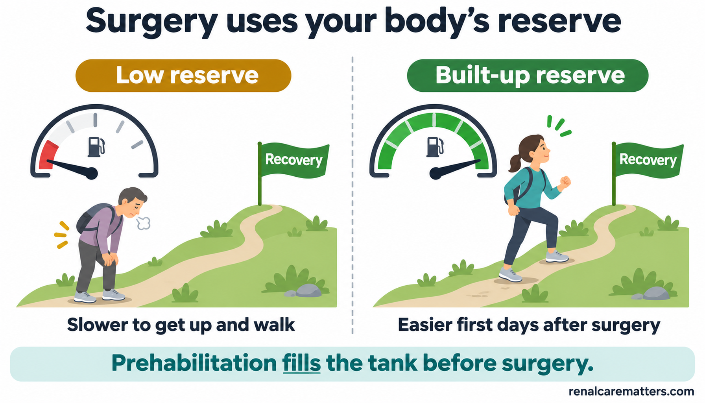
Surgery draws on your reserve. Prehabilitation fills the tank before the climb.Kumukuha ang operasyon sa iyong reserba. Pinupuno ng prehabilitation ang tangke bago ang pag-akyat.Mokuha ang operasyon sa imong reserba. Pun-on sa prehabilitation ang tangke sa dili pa ang pagsaka.Kukwa ya ing operasyun king reserba mu. Pupunan ning prehabilitation ing tangke bayu ning pamanik.
What dialysis does to muscleAno ang ginagawa ng dialysis sa kalamnanUnsa ang buhaton sa dialysis sa kaunoranNanu ing gagawan ning dialysis king laman
Muscle is not fixed tissue. Every day your body breaks some muscle protein down and builds some back up. In kidney failure the balance tips toward breakdown: waste products and acid build up, low-grade inflammation stays switched on, insulin works less well, appetite falls, and some protein and amino acids are lost into the dialysis fluid. Add long hours sitting during and after treatment, and the legs weaken first. Weak legs mean slower walking, more tiredness, and more falls, which in turn means even less activity. That downward loop is what doctors call frailty.Hindi permanenteng tissue ang kalamnan. Araw-araw, may sinisira at may binubuong muli ang katawan na protina ng kalamnan. Sa kidney failure, mas lumalamang ang pagkasira: naiipon ang dumi at asido, tuloy-tuloy ang mahinang pamamaga, humihina ang bisa ng insulin, bumababa ang gana sa pagkain, at may protina at amino acid na nawawala sa dialysis fluid. Idagdag pa ang mahabang oras ng pagkakaupo habang at pagkatapos ng gamutan, kaya unang humihina ang mga binti. Ang mahinang binti ay nangangahulugang mas mabagal na paglakad, mas madaling mapagod, at mas madalas na pagkadapa, na lalong nagpapababa ng galaw. Ang pababang ikot na ito ang tinatawag ng doktor na frailty.Dili permanente nga tisyu ang kaunoran. Matag adlaw, ang lawas mobungkag og pipila ka protina sa kaunoran ug motukod usab. Sa kidney failure, mas modaog ang pagkabungkag: matigom ang hugaw ug asido, padayon ang hinay nga panghubag, mohinay ang epekto sa insulin, mous-os ang gana sa pagkaon, ug adunay protina ug amino acid nga mawala sa dialysis fluid. Idugang pa ang taas nga oras nga naglingkod samtang ug human sa pagtambal, mao nga ang mga bitiis ang unang mohuyang. Ang huyang nga bitiis nagpasabot og mas hinay nga paglakaw, mas dali nga kakapoy, ug mas kanunay nga pagkapukan, nga mas mopaubos pa sa kalihokan. Kini nga paubos nga liko ang gitawag sa doktor nga frailty.E permanenteng tissue ing laman. Aldo-aldo, kakalungkagan ning katawan ing protina ning laman at bubuan ne pasibayu. King kidney failure, mas malagu ing pamakalungkag: mitipun la reng dumi ampo asidu, tuloy-tuloy ing mapaling pamagbaga, maluyang ing insulin, manaba ing gana mangan, at atin protina ampo amino acid a mawala king dialysis fluid. Idagdag pa ing mabayang oras a makalukluk kabang at kaibat ning pamanulu, anya mumuna lang malunus deng bitis. Ing malunus a bitis buri nang sabyan mas malambang paglakad, mas maragul a kapagalan, at mas maralas a pamanabu, a lalung pamababa king galo. Ing pababang ikut a iti ing awagan da reng doktor a frailty.
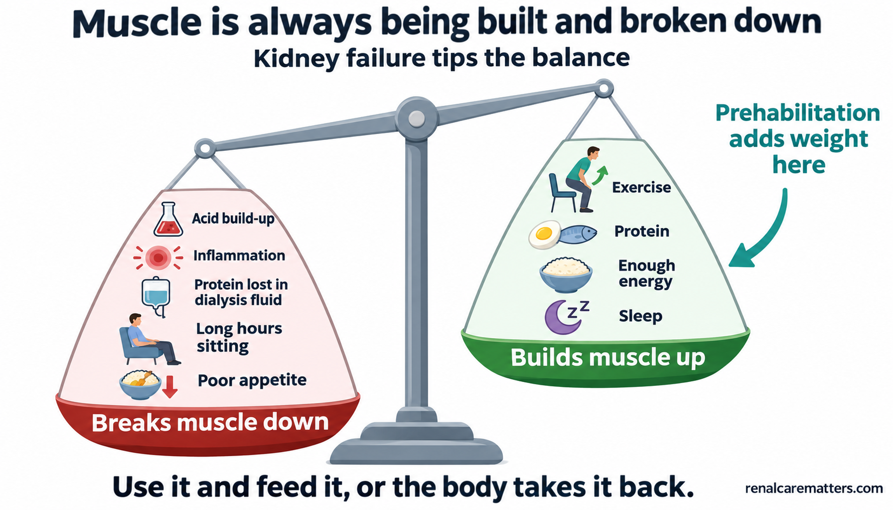
Kidney failure tips muscle toward breakdown. Exercise, protein, energy, and sleep push the balance back.Itinutulak ng kidney failure ang kalamnan patungo sa pagkasira. Ibinabalik ng ehersisyo, protina, enerhiya, at tulog ang timbang.Iduso sa kidney failure ang kaunoran padulong sa pagkabungkag. Ibalik sa ehersisyo, protina, enerhiya, ug tulog ang timbang.Itulak ning kidney failure ing laman papunta king pamakalungkag. Ibalik da ning ehersisyu, protina, enerhiya, ampo tudtud ing timbang.
The five signs of frailty, in plain wordsAng limang palatandaan ng frailty, sa simpleng salitaAng lima ka timailhan sa frailty, sa yanong pulongDeng limang tanda ning frailty, king simpleng amanu
The most widely used definition, the Fried frailty phenotype, counts five things. Having one or two makes you prefrail; three or more makes you frail. Many transplant programs score the first two of these directly.Ang pinakaginagamit na depinisyon, ang Fried frailty phenotype, ay nagbibilang ng limang bagay. Kapag may isa o dalawa, prefrail ka; kapag tatlo o higit pa, frail ka. Maraming transplant program ang direktang sumusukat sa unang dalawa.Ang labing gigamit nga depinisyon, ang Fried frailty phenotype, nag-ihap og lima ka butang. Kung naa kay usa o duha, prefrail ka; kung tulo o labaw pa, frail ka. Daghang transplant program ang direktang mosukod sa unang duha.Ing pekamaralas a gamitan a depinisyun, ing Fried frailty phenotype, bibilang yang limang bage. Nung atin kang metung o adwa, prefrail ka; nung atlu o mas dakal, frail ka. Dakal a transplant program ing direktang sukatan ing mumunang adwa.
- Weak grip: squeezing a grip meter with less force than expected for your sex and size.Mahinang hawak: mas mahina ang pisil sa grip meter kaysa inaasahan para sa iyong kasarian at laki.Huyang nga kupot: mas huyang ang pagpiga sa grip meter kaysa gilauman alang sa imong sekso ug gidak-on.Malunus a kapit: mas malunus ing pamipisil king grip meter kesa king inaasahan para king kasarian at dagul mu.
- Slow walking: taking longer than expected to walk about 4.5 meters (15 feet).Mabagal na paglakad: mas matagal kaysa inaasahan sa paglakad nang mga 4.5 metro (15 talampakan).Hinay nga paglakaw: mas dugay kaysa gilauman sa paglakaw og mga 4.5 metros (15 ka tiil).Malambang paglakad: mas maboyu kesa king inaasahan king paglakad a manga 4.5 metru (15 talampakan).
- Exhaustion: feeling that everything is an effort on most days.Labis na pagod: pakiramdam na pinaghihirapan ang lahat sa karamihan ng araw.Grabe nga kakapoy: pagbati nga lisod ang tanan sa kadaghanan sa mga adlaw.Mapagal a pagal: pamakiramdam a mairap ing eganagang bage king kadakalan a aldo.
- Low activity: very little walking, chores, or exercise in a usual week.Kaunting galaw: napakaunting paglakad, gawaing-bahay, o ehersisyo sa karaniwang linggo.Gamay nga kalihokan: gamay kaayo nga paglakaw, buluhaton sa balay, o ehersisyo sa kasagarang semana.Dikit a galo: dikit a dikit a paglakad, obra king bale, o ehersisyu king karaniwang dominggu.
- Unintended weight loss: losing about 4.5 kg (10 lb) in a year without trying. On dialysis, true weight loss can hide behind fluid changes, so your team looks at dry weight and muscle.Hindi sinasadyang pagbaba ng timbang: nabawasan ng mga 4.5 kg (10 lb) sa loob ng isang taon nang hindi sinasadya. Sa dialysis, maaaring matago ang tunay na pagpayat sa likod ng pagbabago ng tubig sa katawan, kaya tinitingnan ng team ang dry weight at kalamnan.Wala tuyoa nga pagkunhod sa timbang: nakunhoran og mga 4.5 kg (10 lb) sulod sa usa ka tuig nga wala tuyoa. Sa dialysis, ang tinuod nga pagniwang mahimong matago luyo sa kausaban sa tubig sa lawas, mao nga gitan-aw sa team ang dry weight ug kaunoran.Ing e sasadyang pamagbaba ning timbang: mebawasan a manga 4.5 kg (10 lb) king lalam ning metung a banwa a e sasadya. King dialysis, ing tutung pamagpayat malyari yang matagu king likud dareng pamaglino ning danum king katawan, kaya lalawan ning team ing dry weight ampo laman.
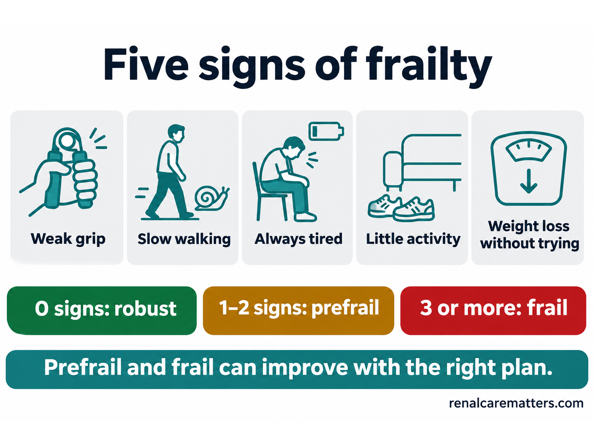
Count the signs: none means robust, one or two means prefrail, three or more means frail. Both prefrail and frail can improve.Bilangin ang palatandaan: wala ay robust, isa o dalawa ay prefrail, tatlo o higit pa ay frail. Parehong maaaring gumaling ang prefrail at frail.Ihapa ang timailhan: wala kay robust, usa o duha kay prefrail, tulo o labaw pa kay frail. Pareho nga mahimong mouswag ang prefrail ug frail.Bilangan me ing tanda: ala yang robust, metung o adwa yang prefrail, atlu o mas dakal yang frail. Pareu dang malyaring miyayap ing prefrail ampo frail.
Frailty is common on the waiting list. In US registry estimates, about 1 in 6 transplant candidates is fully frail (three or more signs). In the largest prehabilitation trial so far, about 4 in 10 waitlisted people had at least two. In a 2025 study of 2,708 transplant candidates in the United States, 4 in 10 had low physical activity and those with low physical function were about half as likely to be placed on the list and more likely to die while waiting.Karaniwan ang frailty sa waiting list. Sa tantiya ng registry sa Estados Unidos, mga 1 sa bawat 6 na transplant candidate ang ganap na frail (tatlo o higit pang palatandaan). Sa pinakamalaking pag-aaral sa prehabilitation sa ngayon, mga 4 sa bawat 10 taong nasa waiting list ang may hindi bababa sa dalawa. Sa isang pag-aaral noong 2025 sa 2,708 transplant candidate sa Estados Unidos, 4 sa bawat 10 ang may mababang galaw, at ang may mahinang pisikal na kakayahan ay halos kalahati lamang ang tsansang mailagay sa listahan at mas malamang na mamatay habang naghihintay.Kasagaran ang frailty sa waiting list. Sa banabana sa registry sa Estados Unidos, mga 1 sa matag 6 ka transplant candidate ang hingpit nga frail (tulo o labaw pa nga timailhan). Sa labing dako nga pagtuon sa prehabilitation karon, mga 4 sa matag 10 ka tawo nga anaa sa waiting list ang adunay labing menos duha. Sa usa ka pagtuon niadtong 2025 sa 2,708 ka transplant candidate sa Estados Unidos, 4 sa matag 10 ang ubos og kalihokan, ug ang mga huyang og pisikal nga abilidad hapit katunga lang ang tsansa nga mabutang sa lista ug mas lagmit nga mamatay samtang naghulat.Karaniwan ya ing frailty king waiting list. King tantya ning registry king Estados Unidos, manga 1 king balang 6 a transplant candidate ing ganap a frail (atlu o mas dakal a tanda). King pekamaragul a pamag-aral king prehabilitation ngeni, manga 4 king balang 10 a tau king waiting list ing atin anggang adwa. King metung a pamag-aral kaniting 2025 king 2,708 a transplant candidate king Estados Unidos, 4 king balang 10 ing mababa ing galo, at deng malunus ing pisikal a kayabe, kalahati mu ing tsansang maiyabe king listahan at mas malyaring mate kabang manaya.
Frailty also follows people into surgery. In one well-known study of 537 transplant recipients, 5-year survival was 91.5% in those who were not frail and 77.5% in those who were frail. This kind of study shows an association: frail people are often sicker in other ways too. It does not prove that getting stronger will close that gap, which is exactly what the newer trials are trying to answer.Sumasama rin ang frailty hanggang sa operasyon. Sa isang kilalang pag-aaral ng 537 transplant recipient, ang 5-taong survival ay 91.5% sa mga hindi frail at 77.5% sa mga frail. Ang ganitong pag-aaral ay nagpapakita ng kaugnayan: ang mga frail ay madalas na mas maysakit din sa ibang paraan. Hindi nito napapatunayan na ang paglakas ay magsasara sa agwat na iyon, at iyon mismo ang sinusubukang sagutin ng mga bagong trial.Mosunod usab ang frailty hangtod sa operasyon. Sa usa ka ilado nga pagtuon sa 537 ka transplant recipient, ang 5-ka-tuig nga survival 91.5% sa dili frail ug 77.5% sa frail. Kini nga matang sa pagtuon nagpakita og kalambigitan: ang mga frail kasagaran mas masakiton usab sa ubang paagi. Wala kini nagpamatuod nga ang paglig-on mosira sa maong gintang, ug mao gyud kana ang gusto tubagon sa mga bag-ong trial.Tutuki ya mu naman ing frailty anggang king operasyun. King metung a kilalang pamag-aral king 537 a transplant recipient, ing 5-banwang survival 91.5% kareng ali frail at 77.5% kareng frail. Ing makanyan a pamag-aral pakit ne ing kaugnayan: deng frail kalupan mas masakit la naman king aliwang paralan. E na papatune nung ing pamagsikan isara na ing agwat a ita, at ita mismu ing buri dang sagutan dareng bayung trial.
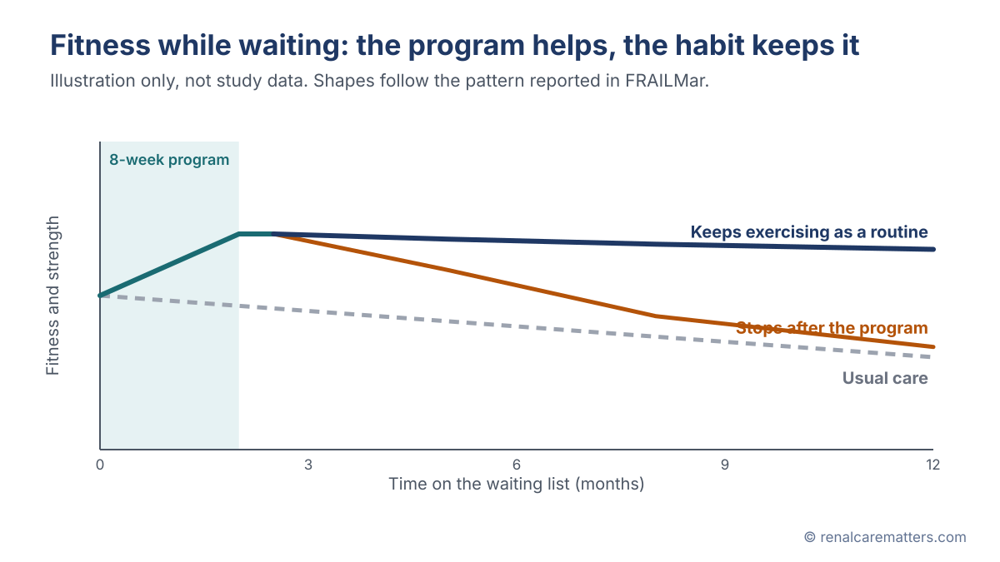
An illustration, not study data: without action, fitness tends to drift down on the waiting list. A program lifts it, but the gain fades if the habit stops.Isang larawan, hindi datos ng pag-aaral: kung walang gagawin, kadalasang bumababa ang fitness habang nasa waiting list. Itinataas ito ng isang programa, pero nawawala ang pakinabang kapag tumigil ang ugali.Usa ka hulagway, dili datos sa pagtuon: kung walay buhaton, kasagaran mous-os ang fitness samtang anaa sa waiting list. Gipataas kini sa usa ka programa, apan mawala ang kaayohan kung mohunong ang batasan.Metung a larawan, ali datos ning pamag-aral: nung alang gagawan, kalupan manaba ing fitness kabang atiu king waiting list. Pataasan ne ning metung a programa, pero mawala ing kapakanan nung tumigil ing ugali.
What prehabilitation is: three pillarsAno ang prehabilitation: tatlong haligiUnsa ang prehabilitation: tulo ka haligiNanu ing prehabilitation: atlung adigi
Prehabilitation is not one exercise class. It is a plan with three parts that work together, because muscle needs all three to grow: a reason to grow (exercise), the building blocks (protein and enough calories), and the energy and motivation to keep going (mind and mood).Ang prehabilitation ay hindi iisang klase ng ehersisyo. Ito ay plano na may tatlong bahaging nagtutulungan, dahil kailangan ng kalamnan ang tatlo para lumaki: dahilan para lumaki (ehersisyo), mga materyales sa pagbuo (protina at sapat na calories), at lakas ng loob para magpatuloy (isip at damdamin).Ang prehabilitation dili usa lang ka klase sa ehersisyo. Kini usa ka plano nga adunay tulo ka bahin nga nagtinabangay, tungod kay kinahanglan sa kaunoran ang tulo aron motubo: rason aron motubo (ehersisyo), mga materyales sa pagtukod (protina ug igo nga calories), ug kusog sa kabubut-on aron magpadayon (hunahuna ug pagbati).Ing prehabilitation e metung mung klasi ning ehersisyu. Plano ya a atin atlung bage a magtulungan, uli ta kailangan ning laman ing atlu bang lumagu: dahilan bang lumagu (ehersisyu), materyales king pamanyari (protina at sapat a calories), ampo sikan ning lub bang tuloy-tuloy (isip at pamakiramdam).
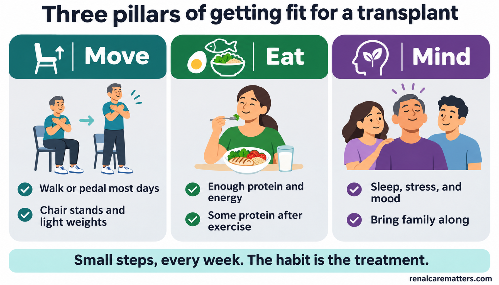
The three pillars of prehabilitation: move most days, eat enough protein and energy, and look after stress, sleep, and mood.Ang tatlong haligi ng prehabilitation: gumalaw sa karamihan ng araw, kumain ng sapat na protina at enerhiya, at alagaan ang stress, tulog, at damdamin.Ang tulo ka haligi sa prehabilitation: paglihok sa kadaghanan sa mga adlaw, pagkaon og igo nga protina ug enerhiya, ug pag-atiman sa stress, tulog, ug pagbati.Deng atlung adigi ning prehabilitation: gumalo king kadakalan a aldo, mangan sapat a protina ampo enerhiya, at ingatan ing stress, tudtud, ampo pamakiramdam.
What the first trial foundAno ang natuklasan ng unang trialUnsa ang nakit-an sa unang trialNanu ing akit ning mumunang trial
The first randomized trial in people waiting for a kidney transplant, called FRAILMar, was done in Barcelona, Spain, and published in 2025. It enrolled 121 people (average age 63). Half were assigned by chance to a supervised program: one-hour sessions three times a week for 8 weeks, mixing walking or cycling, light weights, and breathing-muscle training, with a protein drink after each session. The other half had usual care.Ang unang randomized trial sa mga taong naghihintay ng kidney transplant, na tinatawag na FRAILMar, ay ginawa sa Barcelona, Spain, at nailathala noong 2025. Kasama rito ang 121 katao (average na edad 63). Ang kalahati ay napili nang random para sa isang supervised na programa: isang oras na sesyon, tatlong beses kada linggo sa loob ng 8 linggo, na may paglalakad o pagbibisikleta, magaang na pabigat, at pagsasanay ng kalamnan sa paghinga, na may protein drink pagkatapos ng bawat sesyon. Ang kalahati naman ay may karaniwang pangangalaga.Ang unang randomized trial sa mga tawo nga naghulat og kidney transplant, gitawag og FRAILMar, gihimo sa Barcelona, Spain, ug gipatik niadtong 2025. Naglakip kini og 121 ka tawo (kasagarang edad 63). Ang katunga gipili nga random alang sa usa ka supervised nga programa: usa ka oras nga sesyon, tulo ka higayon matag semana sulod sa 8 ka semana, nga adunay paglakaw o pagbisikleta, gaan nga pabug-at, ug pagbansay sa kaunoran sa pagginhawa, uban ang protein drink human sa matag sesyon. Ang laing katunga adunay kasagarang pag-atiman.Ing mumunang randomized trial kareng taung manaya king kidney transplant, a awagan dang FRAILMar, megawa king Barcelona, Spain, at mibalita kaniting 2025. Kayabe na ing 121 a tau (karaniwang edad 63). Ing kalahati mipili lang random para king metung a supervised a programa: metung a oras a sesyun, makatlu kada dominggu king lalam ning 8 dominggu, a maki paglakad o pamagbisikleta, magaan a pabigat, ampo pamagsanay ning laman king pamangisnawa, a maki protein drink kaibat ning balang sesyun. Ing kalahati maki karaniwang pamanalaga.
After 8 weeks, the exercise group had better exercise capacity, a stronger grip, stronger breathing muscles, and thicker thigh muscle on ultrasound than the usual-care group, and frail participants gained too. It did not change peak oxygen use, 6-minute walking distance, or overall frailty status. Two honest cautions came with it. About one in three eligible people chose not to join. And by 6 months, even with monthly phone check-ins, activity, muscle thickness, and frailty scores had slipped back toward where they started.Pagkalipas ng 8 linggo, mas maganda ang kakayahang mag-ehersisyo, mas malakas ang hawak, mas malakas ang kalamnan sa paghinga, at mas makapal ang kalamnan sa hita sa ultrasound ng grupong nag-ehersisyo kaysa sa grupong may karaniwang pangangalaga, at lumakas din ang mga frail. Hindi nito binago ang pinakamataas na paggamit ng oxygen, ang layo ng 6 na minutong lakad, o ang kabuuang frailty status. Dalawang tapat na babala ang kasama nito. Mga isa sa bawat tatlong kwalipikado ang piniling hindi sumali. At pagdating ng 6 na buwan, kahit may buwanang tawag sa telepono, bumalik malapit sa simula ang galaw, kapal ng kalamnan, at frailty score.Human sa 8 ka semana, mas maayo ang abilidad sa pag-ehersisyo, mas kusgan ang kupot, mas kusgan ang kaunoran sa pagginhawa, ug mas baga ang kaunoran sa paa sa ultrasound sa grupo nga nag-ehersisyo kaysa sa grupo nga adunay kasagarang pag-atiman, ug mikusog usab ang mga frail. Wala kini nag-usab sa kinatas-ang paggamit sa oxygen, sa gilay-on sa 6 ka minutong lakaw, o sa kinatibuk-ang frailty status. Duha ka matinud-anon nga pahimangno ang kauban niini. Mga usa sa matag tulo nga kwalipikado ang mipili nga dili moapil. Ug pag-abot sa 6 ka bulan, bisan adunay binulan nga tawag sa telepono, mibalik duol sa sinugdanan ang kalihokan, gibag-on sa kaunoran, ug frailty score.Kaibat ning 8 dominggu, mas mayap ing kayabe mag-ehersisyu, mas masikan ing kapit, mas masikan ing laman king pamangisnawa, at mas makapal ing laman king pupu king ultrasound ning grupung mig-ehersisyu kesa king grupung maki karaniwang pamanalaga, at sinikan la naman deng frail. E na beguan ing pekamatas a pamanggamit oxygen, ing layu ning 6 minutung lakad, o ing kabuuang frailty status. Adwang tapat a paalala ing kayabe na. Manga metung king balang atlung kwalipikadu ing pinili dang e makiyabe. At pamanyabi ning 6 bulan, maski atin buwanang tawag king telepunu, bumalik ya malapit king pamimpisan ing galo, kapal ning laman, ampo frailty score.
What the trials have not shown yetAng hindi pa naipapakita ng mga trialAng wala pa mapakita sa mga trialIng e pa pepakit dareng trial
So far, no randomized trial has even tested whether prehabilitation leads to a longer-lasting kidney, fewer complications, or a shorter hospital stay after transplant. The trials measured fitness and muscle, which are steps on the way, not the final goal. We recommend it because it is safe for most people, it helps you feel and move better now, and it keeps you ready, not because it guarantees a better transplant.Sa ngayon, wala pang randomized trial na sumubok man lang kung ang prehabilitation ay nagdudulot ng mas matagal na bato, mas kaunting komplikasyon, o mas maikling pananatili sa ospital pagkatapos ng transplant. Ang sinukat ng mga trial ay fitness at kalamnan, na mga hakbang patungo roon, hindi ang huling layunin. Inirerekomenda namin ito dahil ligtas ito para sa karamihan, nakakatulong ito para mas gumaan ang pakiramdam at galaw mo ngayon, at pinapanatili kang handa, hindi dahil garantisado nitong mas magiging maganda ang transplant.Sa pagkakaron, wala pay randomized trial nga misulay bisan kung ang prehabilitation mohatag og mas dugay nga bato, mas gamay nga komplikasyon, o mas mubo nga pagpabilin sa ospital human sa transplant. Ang gisukod sa mga trial mao ang fitness ug kaunoran, nga mga lakang padulong didto, dili ang katapusang tumong. Girekomenda namo kini tungod kay luwas kini sa kadaghanan, makatabang kini nga mas maayo ang imong pamati ug paglihok karon, ug magpabilin kang andam, dili tungod kay gigarantiya niini ang mas maayong transplant.Ngeni, ala pang randomized trial a sinubuk man mu nung ing prehabilitation magdala yang mas maboyung batu, mas dikit a komplikasyun, o mas malagad a pamanatili king ospital kaibat ning transplant. Ing sinukat dareng trial ing fitness ampo laman, a manga makbang papunta karin, ali ing tauling layunin. Irekomenda me uli ta ligtas ya para king kadakalan, makatulung ya bang mas mayap ing pamakiramdam at galo mu ngeni, at panatili na kang handa, ali uli ta garantisadu nang mas mayap ing transplant.
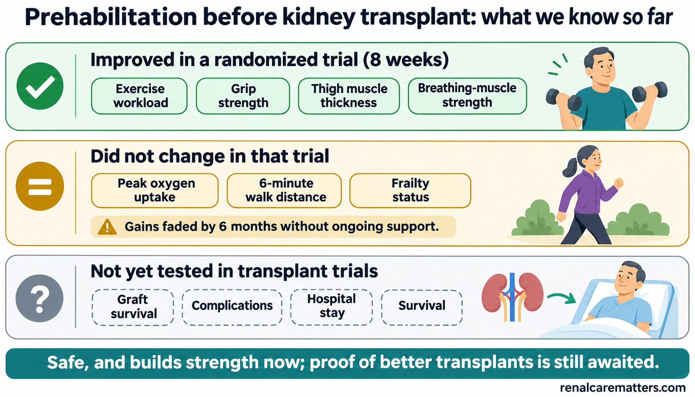
What we know so far: strength improves, some measures did not change, and effects on the transplant itself are not yet tested.Ang alam natin sa ngayon: lumalakas ang katawan, may mga sukat na hindi nagbago, at hindi pa nasusubok ang epekto sa mismong transplant.Ang atong nahibaloan karon: mokusog ang lawas, adunay mga sukod nga wala mausab, ug wala pa masulayi ang epekto sa transplant mismo.Ing balu tamu ngeni: sumikan ing katawan, atin sukat a e mibago, at e pa asubuk ing epektu king transplant mismu.
A starter weekly plan you can do at homeIsang panimulang lingguhang plano na kaya sa bahayUsa ka sinugdanang semanal nga plano nga mahimo sa balayMetung a panimulang lingguhang plano a kaya king bale
Muscle grows when it is asked to do a little more than it is used to, then given food and rest to repair. That is why the plan mixes two kinds of work. Aerobic exercise (walking, cycling) trains the heart, lungs, and the tiny energy factories inside muscle cells. Resistance exercise (chair stands, light weights) sends the strongest signal for muscle to build protein. Breathing exercises train the diaphragm, which helps you cough and breathe deeply after surgery.Lumalaki ang kalamnan kapag pinagagawa ito nang kaunti pa sa nakasanayan, at saka binibigyan ng pagkain at pahinga para magpagaling. Kaya pinaghahalo ng plano ang dalawang uri ng gawain. Ang aerobic na ehersisyo (paglalakad, pagbibisikleta) ay nagsasanay sa puso, baga, at sa maliliit na pabrika ng enerhiya sa loob ng mga selula ng kalamnan. Ang resistance na ehersisyo (pagtayo mula sa upuan, magaang na pabigat) ang nagbibigay ng pinakamalakas na senyales para bumuo ng protina ang kalamnan. Ang breathing exercise ay nagsasanay sa diaphragm, na tumutulong sa pag-ubo at malalim na paghinga pagkatapos ng operasyon.Motubo ang kaunoran kung pabuhaton kini og gamay nga labaw sa naandan, unya hatagan og pagkaon ug pahulay aron mamaayo. Mao nga gisagol sa plano ang duha ka matang sa buluhaton. Ang aerobic nga ehersisyo (paglakaw, pagbisikleta) nagbansay sa kasingkasing, baga, ug sa gagmay nga pabrika sa enerhiya sulod sa mga selula sa kaunoran. Ang resistance nga ehersisyo (pagbarog gikan sa lingkoranan, gaan nga pabug-at) mohatag sa labing kusog nga senyales aron motukod og protina ang kaunoran. Ang breathing exercise nagbansay sa diaphragm, nga motabang sa pag-ubo ug lawom nga pagginhawa human sa operasyon.Lumagu ya ing laman nung pagawan me dikit a mas dakal kesa king anggaga na, at kaibat bibyan me pamangan ampo pamagpaynawa bang mayap. Kaya pigsalu ning plano ing adwang klasi ning obra. Ing aerobic a ehersisyu (paglakad, pamagbisikleta) sasanayan na ing pusu, baga, ampo deng malating pabrika ning enerhiya king lalam dareng selula ning laman. Ing resistance a ehersisyu (pamipalto ibat king lukluk, magaan a pabigat) ing mamye pekamasikan a senyales bang manyari protina ing laman. Ing breathing exercise sasanayan na ing diaphragm, a tutulung king pamaku at malalam a pamangisnawa kaibat ning operasyun.
| DayArawAdlawAldo | What to doGagawinBuhatonGawan | How much to startGaano karami sa simulaUnsa kadaghan sa sinugdananMakananu kadakal king pamimpisan |
|---|---|---|
| Dialysis days (for example Mon/Wed/Fri)Araw ng dialysis (halimbawa Lun/Miy/Biy)Adlaw sa dialysis (pananglitan Lun/Miy/Biy)Aldo ning dialysis (alimbawa Lun/Miy/Bye) | Pedal exerciser or leg lifts in the first half of the session, if your unit allows. Rest after.Pedal exerciser o pag-angat ng binti sa unang kalahati ng sesyon, kung pinapayagan ng unit. Magpahinga pagkatapos.Pedal exerciser o pag-alsa sa bitiis sa unang katunga sa sesyon, kung gitugotan sa unit. Pahulay human.Pedal exerciser o pamangatas bitis king mumunang kalahati ning sesyun, nung pipayagan ning unit. Magpaynawa kaibat. | 10–15 minutes, easy pace10–15 minuto, magaan na bilis10–15 ka minuto, hinay nga dagan10–15 minutu, magaan a bilis |
| Non-dialysis days (for example Tue/Thu/Sat)Walang dialysis (halimbawa Mar/Huw/Sab)Walay dialysis (pananglitan Mar/Huw/Sab)Alang dialysis (alimbawa Mar/Hwe/Sab) | Walk; then chair stands; then light weights or water bottles with the arm that has no fistula.Maglakad; pagkatapos ay pagtayo mula sa upuan; pagkatapos ay magaang na pabigat o bote ng tubig gamit ang braso na walang fistula.Paglakaw; dayon pagbarog gikan sa lingkoranan; dayon gaan nga pabug-at o botelya sa tubig gamit ang bukton nga walay fistula.Maglakad; kaibat pamipalto ibat king lukluk; kaibat magaan a pabigat o bote ning danum gamit ing gamat a alang fistula. | Walk 10 minutes; 2 sets of 8 chair stands; 2 sets of 10 arm curlsLakad 10 minuto; 2 set ng 8 pagtayo; 2 set ng 10 arm curlLakaw 10 ka minuto; 2 ka set sa 8 ka pagbarog; 2 ka set sa 10 ka arm curlLakad 10 minutu; 2 set ning 8 a pamipalto; 2 set ning 10 arm curl |
| Every dayAraw-arawMatag adlawAldo-aldo | Slow deep breathing: breathe in through the nose for 3 seconds, out through pursed lips for 6.Mabagal na malalim na paghinga: huminga sa ilong nang 3 segundo, ilabas sa nakaipit na labi nang 6.Hinay nga lawom nga pagginhawa: ginhawa sa ilong sulod sa 3 segundo, gawas sa gipiot nga ngabil sulod sa 6.Malambang malalam a pamangisnawa: mangisnawa king arung king 3 segundu, ilwal king mekaipit a labi king 6. | 5 minutes, twice a day5 minuto, dalawang beses sa isang araw5 ka minuto, kaduha sa usa ka adlaw5 minutu, makaduang besis king metung a aldo |
| One day a weekIsang araw kada linggoUsa ka adlaw matag semanaMetung a aldo kada dominggu | Rest, or an easy family walk.Pahinga, o magaang na paglalakad kasama ang pamilya.Pahulay, o hinay nga paglakaw uban ang pamilya.Pamagpaynawa, o magaan a paglakad kayabe ing pamilya. | As you likeAyon sa gustoSumala sa gustoAgpang king buri mu |
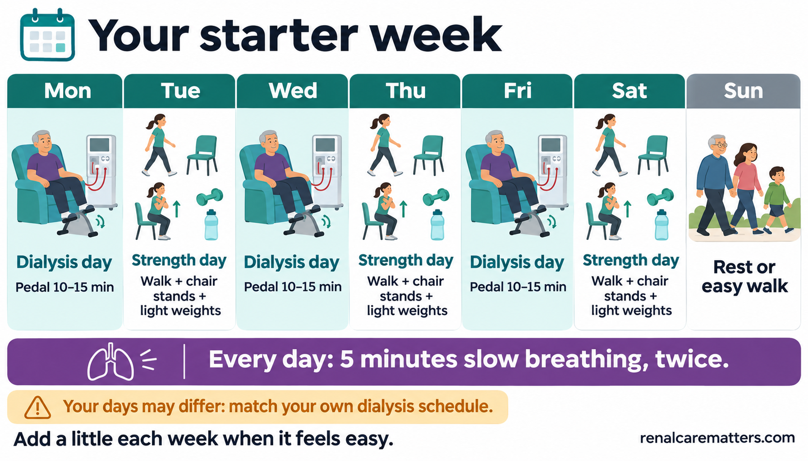
Your starter week at a glance. Match the days to your own dialysis schedule.Ang iyong panimulang linggo sa isang tingin. Itugma ang mga araw sa sarili mong iskedyul ng dialysis.Ang imong sinugdanang semana sa usa ka tan-aw. Ipahiangay ang mga adlaw sa imong kaugalingong iskedyul sa dialysis.Ing panimulang dominggu mu king metung a lawe. Itugma me reng aldo king sariling iskedyul mu ning dialysis.
How hard, and how to build upGaano kabigat, at paano dadagdaganUnsa ka bug-at, ug unsaon pagdugangMakananu kabayat, at makananu dagdagan
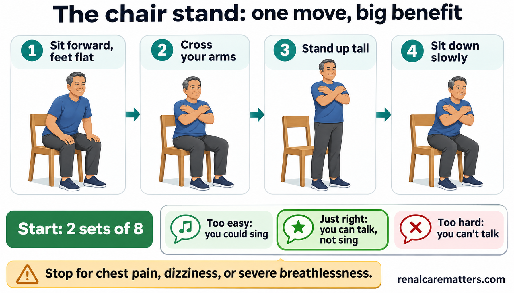
The chair stand in four steps, and the talk test: you should be able to talk, but not sing.Ang pagtayo mula sa upuan sa apat na hakbang, at ang talk test: dapat kaya mong magsalita, pero hindi kumanta.Ang pagbarog gikan sa lingkoranan sa upat ka lakang, ug ang talk test: kinahanglan makasulti ka, apan dili makakanta.Ing pamipalto ibat king lukluk king apat a makbang, ampo ing talk test: dapat kaya mung manyalita, pero e kumanta.
- The talk test. You should be able to talk in short sentences but not sing. On a 6-to-20 effort scale, aim for about 12 to 14, which feels "somewhat hard."Ang talk test. Dapat kaya mong magsalita nang maiikling pangungusap pero hindi kumanta. Sa 6-hanggang-20 na sukat ng hirap, layunin ang mga 12 hanggang 14, na pakiramdam ay "medyo mabigat."Ang talk test. Kinahanglan makasulti ka og mugbong mga pulong apan dili makakanta. Sa 6-hangtod-20 nga sukdanan sa kakugi, tumong ang mga 12 hangtod 14, nga mobati og "medyo bug-at."Ing talk test. Dapat kaya mung manyalitang malagad a pangungusap pero e kumanta. King 6-anggang-20 a sukad ning kairapan, layunin ing manga 12 anggang 14, a pamakiramdam "medyu mabayat."
- Add a little each week. Add 2 to 5 minutes of walking, or 2 more chair stands, when the current level feels easy two sessions in a row.Magdagdag nang kaunti bawat linggo. Magdagdag ng 2 hanggang 5 minutong lakad, o 2 pang pagtayo, kapag magaan na ang kasalukuyang antas sa dalawang sunod na sesyon.Pagdugang og gamay matag semana. Idugang ang 2 hangtod 5 ka minuto nga paglakaw, o 2 pa ka pagbarog, kung gaan na ang kasamtangang lebel sa duha ka sunod-sunod nga sesyon.Magdagdag dikit balang dominggu. Magdagdag 2 anggang 5 minutung lakad, o 2 pang pamipalto, nung magaan ne ing kasalukuyang antas king adwang sunud-sunud a sesyun.
- The long-term target for most people with kidney disease is about 150 minutes of moderate activity a week, or whatever your heart and body allow. Starting at 30 minutes a week is still a start.Ang pangmatagalang target para sa karamihan ng may sakit sa bato ay mga 150 minuto ng katamtamang galaw bawat linggo, o kung ano ang kaya ng iyong puso at katawan. Ang pagsisimula sa 30 minuto bawat linggo ay simula pa rin.Ang dugay nga target alang sa kadaghanan nga adunay sakit sa bato mga 150 ka minuto sa kasarangang kalihokan matag semana, o kung unsa ang makaya sa imong kasingkasing ug lawas. Ang pagsugod sa 30 ka minuto matag semana sinugdanan gihapon.Ing pangmatagalang target para king kadakalan a maki sakit king batu manga 150 minutu ning katamtamang galo balang dominggu, o nanu mang kaya ning pusu at katawan mu. Ing pamimpisan king 30 minutu balang dominggu, pamimpisan ya pa rin.
Special situationsMga espesyal na sitwasyonMga espesyal nga sitwasyonReng espesyal a sitwasyun
- Fistula or graft arm: no heavy weights, tight straps, or blood pressure cuffs on that arm. Gentle hand squeezes are fine.Brasong may fistula o graft: walang mabigat na pabigat, masikip na tali, o BP cuff sa brasong iyon. Ayos lang ang marahang pagpisil ng kamay.Bukton nga adunay fistula o graft: walay bug-at nga pabug-at, hugot nga higot, o BP cuff sa maong bukton. Okay ra ang hinay nga pagpiga sa kamot.Gamat a maki fistula o graft: alang mabayat a pabigat, masikip a tali, o BP cuff king gamat a ita. Mayap mu ing marahang pamipisil ning gamat.
- Dialysis catheter in the neck or chest: keep the dressing dry; no swimming.Dialysis catheter sa leeg o dibdib: panatilihing tuyo ang dressing; bawal lumangoy.Dialysis catheter sa liog o dughan: ipabilin nga uga ang dressing; dili molangoy.Dialysis catheter king batal o salu: panatilian yang malangi ing dressing; e malyaring lumangui.
- Peritoneal dialysis: ask whether to exercise with less fluid in your belly, and avoid heavy straining that can cause a hernia.Peritoneal dialysis: itanong kung dapat mag-ehersisyo nang mas kaunti ang fluid sa tiyan, at iwasan ang matinding pag-ire na maaaring magdulot ng hernia.Peritoneal dialysis: pangutana kung angay ba mag-ehersisyo nga mas gamay ang fluid sa tiyan, ug likayi ang kusog nga pag-ire nga mahimong hinungdan sa hernia.Peritoneal dialysis: ikutang mu nung dapat kang mag-ehersisyu a mas dikit ing fluid king atyan, at iwasan ing masikan a pamag-ire a malyaring pakibatan ning hernia.
- Heat: in Philippine heat, exercise early morning or indoors. Do not drink beyond your fluid limit to "replace sweat" unless your team says so.Init: sa init ng Pilipinas, mag-ehersisyo nang maagang umaga o sa loob ng bahay. Huwag uminom nang lampas sa fluid limit para "palitan ang pawis" maliban kung sinabi ng team.Kainit: sa kainit sa Pilipinas, pag-ehersisyo sa sayo sa buntag o sulod sa balay. Ayaw pag-inom labaw sa fluid limit aron "ilisan ang singot" gawas kung giingon sa team.Pali: king pali ning Pilipinas, mag-ehersisyu kaybat ning abak o king lalam ning bale. E ka minum lampas king fluid limit bang "alilan ing pawis" nung e sinabi ning team.
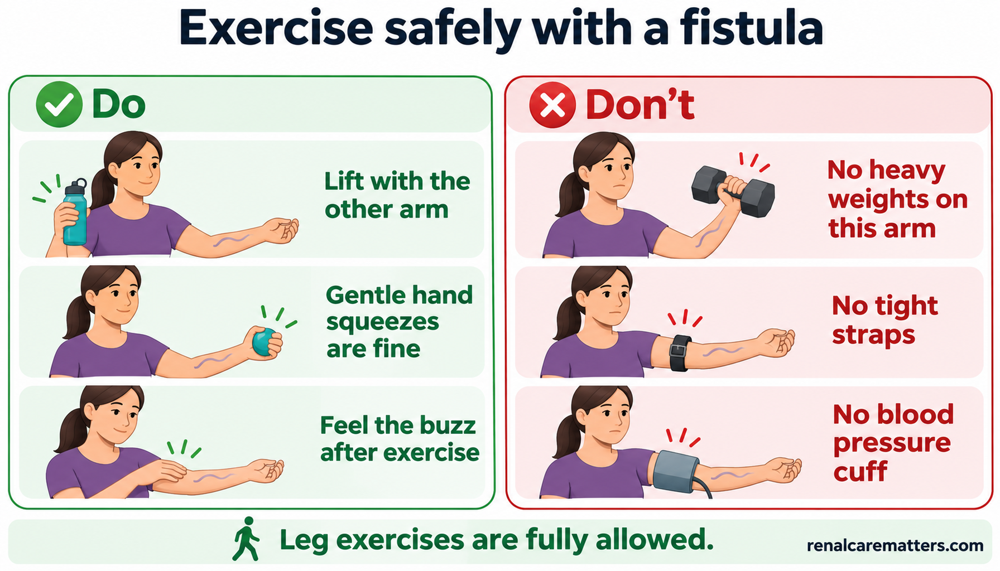
Protect the fistula arm: lift with the other arm, and keep straps and cuffs off it. Leg exercise is fully allowed.Protektahan ang brasong may fistula: gamitin ang kabilang braso sa pagbuhat, at iwasan ang tali at cuff dito. Malayang gawin ang ehersisyo sa binti.Panalipdi ang bukton nga adunay fistula: gamita ang laing bukton sa pagbayaw, ug ayaw butangi og higot ug cuff. Gawasnon ang ehersisyo sa bitiis.Protektan me ing gamat a maki fistula: gamitan me ing aliwang gamat king pamuat, at iwasan ing tali ampo cuff kaniti. Malaya ing ehersisyu king bitis.
Track three numbers each monthItala ang tatlong numero bawat buwanIsulat ang tulo ka numero matag bulanIsulat ing atlung numeru balang bulan
Progress you can see keeps you going. Once a month, on a non-dialysis day, write down: (1) how many times you can stand up from a chair, arms crossed, in 30 seconds; (2) how far you can walk in 6 minutes, or how long it takes to walk 4 meters; and (3) your grip strength, if your clinic has a grip meter. Bring the list to your transplant visits.Ang nakikitang pag-unlad ay nagpapatuloy sa iyo. Isang beses kada buwan, sa araw na walang dialysis, isulat: (1) ilang beses kang makakatayo mula sa upuan, nakakrus ang braso, sa loob ng 30 segundo; (2) gaano kalayo ang kaya mong lakarin sa loob ng 6 minuto, o gaano katagal lakarin ang 4 na metro; at (3) ang lakas ng iyong hawak, kung may grip meter ang klinika. Dalhin ang listahan sa iyong mga transplant visit.Ang makita nga pag-uswag magpadayon kanimo. Kausa matag bulan, sa adlaw nga walay dialysis, isulat: (1) pila ka higayon ka makabarog gikan sa lingkoranan, nakakros ang bukton, sulod sa 30 segundo; (2) unsa kalayo ang imong malakaw sulod sa 6 ka minuto, o unsa kadugay ang paglakaw og 4 ka metros; ug (3) ang kusog sa imong kupot, kung adunay grip meter ang klinika. Dad-a ang lista sa imong mga transplant visit.Ing akakit a pamaglago tuloy na ka. Misan kada bulan, king aldo a alang dialysis, isulat: (1) pilan a besis kang makapalto ibat king lukluk, makakrus ing gamat, king lalam ning 30 segundu; (2) makananu kalayu ing kaya mung lakaran king lalam ning 6 minutu, o makananu kabuyu ing paglakad king 4 metru; at (3) ing sikan ning kapit mu, nung atin grip meter ing klinika. Darang mu ing listahan kareng transplant visit mu.
Eating to build muscle while you waitPagkain para bumuo ng kalamnan habang naghihintayPagkaon aron motukod og kaunoran samtang naghulatPamangan bang manyari laman kabang manaya
Exercise is the signal; protein is the brick. Without enough protein and calories, the body uses muscle as fuel and exercise cannot build anything. People on dialysis need more protein than before dialysis, because dialysis removes amino acids and the body is in a more catabolic (breaking-down) state.Ang ehersisyo ang senyales; ang protina ang ladrilyo. Kung kulang ang protina at calories, ginagamit ng katawan ang kalamnan bilang gasolina at walang mabubuo ang ehersisyo. Ang mga naka-dialysis ay nangangailangan ng mas maraming protina kaysa bago mag-dialysis, dahil inaalis ng dialysis ang amino acid at mas nasa estadong catabolic (pagkasira) ang katawan.Ang ehersisyo ang senyales; ang protina ang bloke. Kung kulang ang protina ug calories, gamiton sa lawas ang kaunoran isip sugnod ug walay matukod ang ehersisyo. Ang mga naka-dialysis nagkinahanglan og mas daghan nga protina kaysa sa wala pa mag-dialysis, tungod kay gikuha sa dialysis ang amino acid ug ang lawas anaa sa mas catabolic (pagkabungkag) nga kahimtang.Ing ehersisyu ing senyales; ing protina ing ladrilyu. Nung kulang ing protina at calories, gamitan ning katawan ing laman antimong gasolina at alang mayari ing ehersisyu. Deng naka-dialysis kailangan da ing mas dakal a protina kesa bayu mag-dialysis, uli ta ilalako ning dialysis ing amino acid at mas atiu king catabolic (pamakalungkag) a kalagayan ing katawan.
| Your situationAng iyong sitwasyonAng imong sitwasyonIng sitwasyun mu | Usual protein targetKaraniwang target na protinaKasagarang target sa protinaKaraniwang target a protina | Example for a 60-kg adultHalimbawa para sa 60-kg na adultoPananglitan alang sa 60-kg nga hamtongAlimbawa para king 60-kg a matua |
|---|---|---|
| On hemodialysis, stableNaka-hemodialysis, stableNaka-hemodialysis, stableNaka-hemodialysis, stable | 1.0–1.2 g/kg/day | 60–72 g of protein a day60–72 g na protina bawat araw60–72 g nga protina matag adlaw60–72 g a protina balang aldo |
| On peritoneal dialysis, stableNaka-peritoneal dialysis, stableNaka-peritoneal dialysis, stableNaka-peritoneal dialysis, stable | 1.0–1.2 g/kg/day | 60–72 g a day; peritoneal dialysis (PD) also loses protein into the fluid60–72 g bawat araw; nawawalan din ng protina sa fluid ang peritoneal dialysis (PD)60–72 g matag adlaw; mawad-an usab og protina sa fluid ang peritoneal dialysis (PD)60–72 g balang aldo; mawalan ya mu naman protina king fluid ing peritoneal dialysis (PD) |
| Not yet on dialysisHindi pa naka-dialysisWala pa naka-dialysisE pa naka-dialysis | Usually lower, to protect the kidneysKaraniwang mas mababa, para protektahan ang batoKasagaran mas ubos, aron mapanalipdan ang batoKaraniwang mas mababa, bang protektan ing batu | Do not raise protein on your own; ask your nephrologist and dietitianHuwag dagdagan ang protina nang mag-isa; itanong sa nephrologist at dietitianAyaw dugangi ang protina nga ikaw ra; pangutana sa nephrologist ug dietitianE mu dagdagan ing protina nung ika mu; ikutang mu king nephrologist ampo dietitian |
Energy matters as much as protein: most stable adults on dialysis need about 25 to 35 kilocalories per kilogram a day. Timing helps too. Eating some protein within about an hour after exercise, such as an egg, a piece of fish, or a renal-specific nutrition drink if your team prescribes one, gives the muscle building blocks when it is most ready to use them. In FRAILMar, participants took a protein supplement right after each session.Kasinghalaga ng protina ang enerhiya: karamihan ng stable na adulto sa dialysis ay nangangailangan ng mga 25 hanggang 35 kilocalories kada kilo bawat araw. Nakakatulong din ang tamang oras. Ang pagkain ng kaunting protina sa loob ng mga isang oras pagkatapos mag-ehersisyo, gaya ng itlog, isang piraso ng isda, o renal-specific na nutrition drink kung inireseta ng team, ay nagbibigay sa kalamnan ng materyales kapag ito ay pinakahanda. Sa FRAILMar, uminom ng protein supplement ang mga kalahok pagkatapos ng bawat sesyon.Sama ka importante sa protina ang enerhiya: kadaghanan sa stable nga hamtong sa dialysis nagkinahanglan og mga 25 hangtod 35 ka kilocalories matag kilo matag adlaw. Makatabang usab ang husto nga oras. Ang pagkaon og gamay nga protina sulod sa mga usa ka oras human sa ehersisyo, sama sa itlog, usa ka tipak sa isda, o renal-specific nga nutrition drink kung gireseta sa team, mohatag sa kaunoran og materyales kung kini labing andam. Sa FRAILMar, miinom og protein supplement ang mga partisipante human sa matag sesyon.Antimong kayalaga ning protina ing enerhiya: kadakalan kareng stable a matua king dialysis kailangan da ing manga 25 anggang 35 kilocalories kada kilo balang aldo. Makatulung ya mu naman ing tamang oras. Ing pamangan dikit a protina king lalam ning manga metung a oras kaibat ning ehersisyu, antimo ning ebun, metung a pidasu ning asan, o renal-specific a nutrition drink nung ireseta ning team, mamye materyales king laman nung pekahanda ya. King FRAILMar, minum lang protein supplement deng kayabe kaibat ning balang sesyun.
Filipino protein choices that fit dialysis limitsMga pagpipiliang protinang Pilipino na akma sa limitasyon ng dialysisMga Pilipinong kapilian sa protina nga mohaum sa limitasyon sa dialysisReng Pilipinung pipilian a protina a tugma king limitasyun ning dialysis
| FoodPagkainPagkaonPamangan | Why it helpsBakit nakakatulongNganong makatabangNung bakit makatulung | Watch out forMag-ingat saPag-amping saMag-ingat king |
|---|---|---|
| Egg whites, whole eggsPuti ng itlog, buong itlogPuti sa itlog, tibuok itlogPuti ning ebun, buung ebun | High-quality protein; egg white is low in phosphorusMataas na kalidad na protina; mababa sa phosphorus ang puti ng itlogTaas nga kalidad nga protina; ubos sa phosphorus ang puti sa itlogMataas a kalidad a protina; mababa king phosphorus ing puti ning ebun | Yolk adds phosphorus; follow your lab-based limitMay dagdag na phosphorus ang pula; sundin ang limit batay sa labAdunay dugang phosphorus ang pula; sunda ang limit base sa labAtin dagdag a phosphorus ing malutu; tuparan ing limit batay king lab |
| Fresh fish (bangus, tilapia, galunggong), chicken without skinSariwang isda (bangus, tilapia, galunggong), manok na walang balatPresko nga isda (bangus, tilapia, galunggong), manok nga walay panitSariwang asan (bangus, tilapia, galunggong), manuk a alang balat | Complete protein, moderate potassium when boiled or grilledKumpletong protina, katamtamang potassium kapag nilaga o inihawKompleto nga protina, kasarangang potassium kung gilaga o giihawKumpletung protina, katamtamang potassium nung nilaga o inyaw | Portion size; sauces with soy or patis add saltLaki ng hain; may asin ang sarsang may toyo o patisGidak-on sa bahin; adunay asin ang sarsa nga adunay toyo o patisDagul ning ain; atin asin ing sarsang maki toyo o patis |
| Tofu (tokwa), mung beans (monggo) in measured portionsTokwa, monggo sa sukat na hainTokwa, monggo sa gisukod nga bahinTokwa, munggu king sukat a ain | Plant protein; useful later after transplant tooProtinang galing sa halaman; kapaki-pakinabang din pagkatapos ng transplantProtina gikan sa tanom; magamit usab human sa transplantProtinang ibat king tanaman; mapakinabang ya mu naman kaibat ning transplant | Monggo is higher in potassium; ask your dietitian for your portionMas mataas sa potassium ang monggo; itanong sa dietitian ang tamang hainMas taas sa potassium ang monggo; pangutana sa dietitian ang husto nga bahinMas mataas king potassium ing munggu; ikutang mu king dietitian ing tamang ain |
| Dried and processed meats (tuyo, daing, longganisa, hotdog, canned meat)Tuyo at processed na karne (tuyo, daing, longganisa, hotdog, de-lata)Uga ug processed nga karne (tuyo, daing, longganisa, hotdog, de-lata)Tuyu at processed a karne (tuyo, daing, longganisa, hotdog, de-lata) | Convenient, but not a good protein baseMadali, pero hindi magandang batayan ng protinaSayon, apan dili maayong basehan sa protinaMadali, pero e mayap a batayan ning protina | Very high salt and phosphate additives; keep rareNapakaalat at may phosphate additive; bihira lamangKaayo ka asin ug adunay phosphate additive; panagsa raMaalat a maalat at maki phosphate additive; bihira mu |
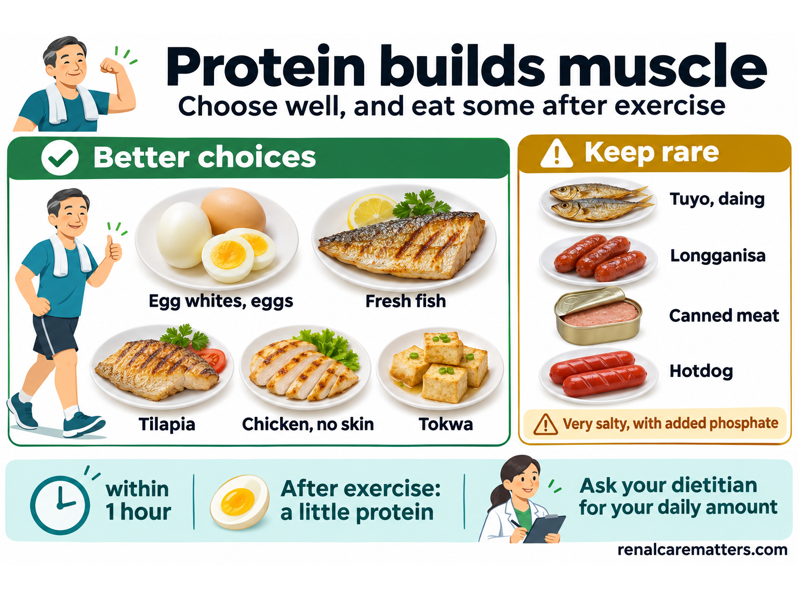
Familiar protein foods that build muscle within dialysis limits, and salty ones to keep rare. Ask your dietitian for your daily amount.Mga kilalang pagkaing may protina na bumubuo ng kalamnan sa loob ng limitasyon ng dialysis, at mga maalat na dapat bihira lang. Itanong sa dietitian ang iyong pang-araw-araw na dami.Mga naila nga pagkaon nga adunay protina nga motukod og kaunoran sulod sa limitasyon sa dialysis, ug mga parat nga angay panagsa ra. Pangutana sa dietitian ang imong adlaw-adlaw nga gidaghanon.Reng kilalang pamangan a maki protina a manyari laman king lalam ning limitasyun ning dialysis, ampo reng maalat a dapat bihira mu. Ikutang mu king dietitian ing aldo-aldong dakal mu.
Stress, sleep, mood, and familyStress, tulog, damdamin, at pamilyaStress, tulog, pagbati, ug pamilyaStress, tudtud, pamakiramdam, ampo pamilya
Waiting is hard. The phone may ring at 2 a.m. or not for years. Long-term stress raises cortisol, which breaks down muscle and disturbs sleep, and poor sleep lowers the drive to move. Low mood is common on dialysis and is treatable. Checking your mood is part of prehabilitation, not a side issue, and every transplant candidate should have a psychosocial assessment.Mahirap ang maghintay. Maaaring tumunog ang telepono nang alas-2 ng madaling-araw o hindi sa loob ng ilang taon. Ang matagal na stress ay nagpapataas ng cortisol, na sumisira sa kalamnan at gumugulo sa tulog, at ang kulang na tulog ay nagpapababa ng gana na gumalaw. Karaniwan ang mababang damdamin sa dialysis at nagagamot ito. Bahagi ng prehabilitation ang pagsusuri ng damdamin, hindi ito gilid na usapin, at bawat transplant candidate ay dapat magkaroon ng psychosocial assessment.Lisod ang paghulat. Mahimong motingog ang telepono sa alas-2 sa kaadlawon o dili sulod sa pipila ka tuig. Ang dugay nga stress mopataas sa cortisol, nga mobungkag sa kaunoran ug mogubot sa tulog, ug ang kulang nga tulog mopaubos sa gana sa paglihok. Kasagaran ang ubos nga pagbati sa dialysis ug matambalan kini. Bahin sa prehabilitation ang pagsusi sa pagbati, dili kini kilid nga isyu, ug ang matag transplant candidate kinahanglan adunay psychosocial assessment.Mairap ing manaya. Malyaring tumunug ing telepunu alas-2 ning gatpanapun o ali king lalam ning pilan a banwa. Ing maboyung stress pataasan na ing cortisol, a lungkagan na ing laman at gulwan na ing tudtud, at ing kulang a tudtud pababan na ing gana gumalo. Karaniwan ya ing mababang pamakiramdam king dialysis at agamut ya. Bage ning prehabilitation ing pamanyiasat ning pamakiramdam, ali ya gilid a usapan, at ing balang transplant candidate dapat atin yang psychosocial assessment.
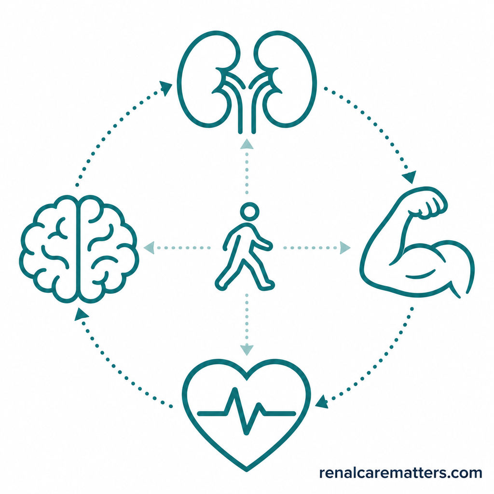
Kidney, muscle, heart, and mind are one loop: moving, eating well, and support help all four.Iisang ikot ang bato, kalamnan, puso, at isip: nakakatulong sa apat ang paggalaw, tamang pagkain, at suporta.Usa ka liko ang bato, kaunoran, kasingkasing, ug hunahuna: makatabang sa upat ang paglihok, maayong pagkaon, ug suporta.Metung mung ikut ing batu, laman, pusu, ampo isip: makatulung king apat ing pamaggalo, mayap a pamangan, ampo suporta.
- Keep a regular sleep time, and avoid long naps after dialysis that steal night sleep.Panatilihin ang regular na oras ng tulog, at iwasan ang mahahabang idlip pagkatapos ng dialysis na umaagaw sa tulog sa gabi.Ipabilin ang regular nga oras sa tulog, ug likayi ang taas nga idlip human sa dialysis nga mokawat sa tulog sa gabii.Panatilian ing regular a oras ning tudtud, at iwasan ing mabayang idlip kaibat ning dialysis a manakao king tudtud king bengi.
- Exercise with someone: a family member counting chair stands, or a dialysis neighbor on the next pedal.Mag-ehersisyo kasama ang iba: kapamilyang nagbibilang ng pagtayo, o katabi sa dialysis na nagpe-pedal din.Pag-ehersisyo uban sa uban: membro sa pamilya nga moihap sa pagbarog, o silingan sa dialysis nga nagpedal usab.Mag-ehersisyu kayabe ing aliwa: kapamilya a bibilang king pamipalto, o katabi king dialysis a mamedal mu naman.
- Answer the PHQ-9 (Patient Health Questionnaire-9) every few months, and tell your team if the score rises or if you ever think of harming yourself.Sagutan ang PHQ-9 (Patient Health Questionnaire-9) tuwing ilang buwan, at sabihin sa team kung tumataas ang score o kung naisip mong saktan ang sarili.Tubaga ang PHQ-9 (Patient Health Questionnaire-9) matag pipila ka bulan, ug sultihi ang team kung mosaka ang score o kung naghunahuna ka nga dagmalan ang imong kaugalingon.Sagutan ing PHQ-9 (Patient Health Questionnaire-9) balang pilan a bulan, at sabyan me ing team nung tatas ing score o nung minisip kang saktan me ing sarili mu.
Why the gains fade, and how to keep themBakit nawawala ang pakinabang, at paano ito mapapanatiliNganong mawala ang kaayohan, ug unsaon pagpabilin niiniNung bakit mawala ing kapakanan, at makananu yang panatilian
Muscle is expensive for the body to keep. When the exercise signal stops, the body starts trimming it within weeks, and in kidney failure the pull toward breakdown is stronger than usual. That is why the FRAILMar gains faded by 6 months, and why a large Dutch trial of exercise after transplant (the ACT trial) found that benefits seen during 3 months of supervised training were no longer clear at 15 months. The lesson is not that exercise fails. It is that a short program is not enough; the habit is the treatment.Mahal para sa katawan ang pagpapanatili ng kalamnan. Kapag tumigil ang senyales ng ehersisyo, sinisimulan itong bawasan ng katawan sa loob ng ilang linggo, at sa kidney failure mas malakas ang hila patungo sa pagkasira. Kaya nawala ang pakinabang ng FRAILMar pagdating ng 6 na buwan, at kaya natuklasan ng isang malaking trial sa Netherlands tungkol sa ehersisyo pagkatapos ng transplant (ang ACT trial) na ang pakinabang na nakita sa 3 buwang supervised na pagsasanay ay hindi na malinaw pagdating ng 15 buwan. Ang aral ay hindi na pumapalya ang ehersisyo. Ito ay na hindi sapat ang maikling programa; ang ugali mismo ang gamot.Mahal alang sa lawas ang pagpabilin sa kaunoran. Kung mohunong ang senyales sa ehersisyo, sugdan kini pagkunhod sa lawas sulod sa pipila ka semana, ug sa kidney failure mas kusog ang guyod padulong sa pagkabungkag. Mao nga nawala ang kaayohan sa FRAILMar pag-abot sa 6 ka bulan, ug mao nga nakit-an sa usa ka dako nga trial sa Netherlands bahin sa ehersisyo human sa transplant (ang ACT trial) nga ang kaayohan nga nakita sa 3 ka bulan nga supervised nga pagbansay dili na klaro pag-abot sa 15 ka bulan. Ang leksyon dili nga mapakyas ang ehersisyo. Kini mao nga dili igo ang mubo nga programa; ang batasan mismo ang tambal.Mal ya para king katawan ing pamanatili ning laman. Nung tumigil ing senyales ning ehersisyu, pimpisan na yang bawasan ning katawan king lalam ning pilan a dominggu, at king kidney failure mas masikan ing guyud papunta king pamakalungkag. Kaya mewala ing kapakanan ning FRAILMar pamanyabi ning 6 bulan, at kaya akit ning metung a maragul a trial king Netherlands tungkul king ehersisyu kaibat ning transplant (ing ACT trial) a ing kapakanan a akit king 3 bulan a supervised a pamagsanay ali ne malino pamanyabi ning 15 bulan. Ing aral ali ya ing pupalya ing ehersisyu. Iti ya a e sapat ing malagad a programa; ing ugali mismu ing gamot.
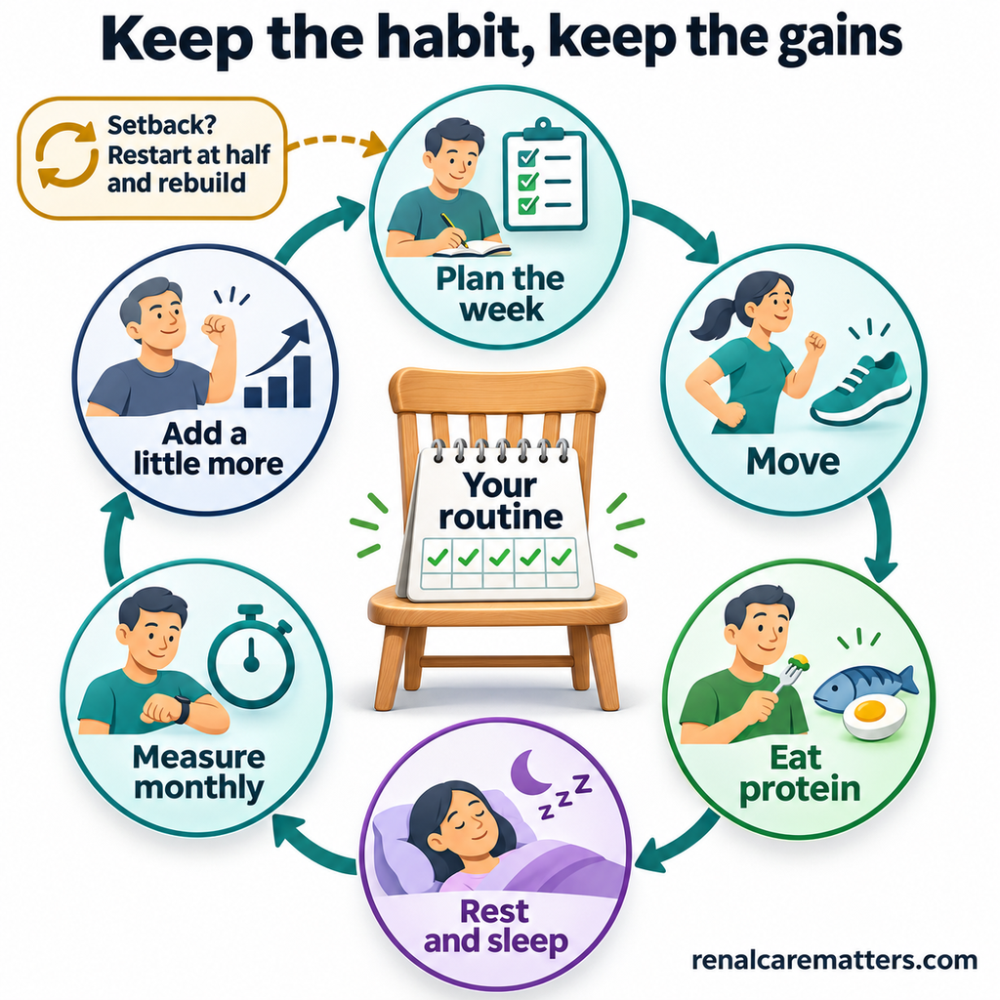
Keep the loop turning. After a setback, restart at half and rebuild.Panatilihing umiikot ang siklo. Pagkatapos ng aberya, magsimula sa kalahati at buuin muli.Ipadayon ang liko. Human sa kapakyasan, sugdi sa katunga ug tukora pag-usab.Panatilian yang umikut ing siklo. Kaibat ning aberya, mamimpisan king kalahati at buuan me pasibayu.
- Anchor it. Tie exercise to something you already do: pedal during dialysis, chair stands before every meal on off-days.Iugnay ito. Ikabit ang ehersisyo sa bagay na ginagawa mo na: mag-pedal habang nagda-dialysis, pagtayo bago kumain sa mga araw na walang dialysis.Ikabit kini. Ikonektar ang ehersisyo sa butang nga gibuhat na nimo: pag-pedal samtang nagdialysis, pagbarog sa dili pa mokaon sa mga adlaw nga walay dialysis.Ikabit me. Ikabit me ing ehersisyu king bage a gagawan mu na: mamedal kabang mag-dialysis, pamipalto bayu mangan kareng aldo a alang dialysis.
- Ask your unit whether it can offer pedal exercisers or a group stretching time. A few shared pedal machines cost far less than a hospital stay.Tanungin ang unit kung makapagbibigay ito ng pedal exerciser o oras ng sabayang stretching. Ang ilang pinagsasaluhang pedal machine ay mas mura kaysa pananatili sa ospital.Pangutan-a ang unit kung makahatag ba kini og pedal exerciser o oras sa dungan nga stretching. Ang pipila ka gipaambit nga pedal machine mas barato kaysa pagpabilin sa ospital.Ikutang me ing unit nung malyari yang mamye pedal exerciser o oras ning sabayang stretching. Ing pilan a pisasaluan a pedal machine mas mura kesa king pamanatili king ospital.
- Re-test monthly and celebrate any gain, even one extra chair stand.Ulitin ang pagsukat buwan-buwan at ipagdiwang ang anumang pag-unlad, kahit isang dagdag na pagtayo.Sukda pag-usab matag bulan ug saulogi ang bisan unsang pag-uswag, bisan usa ka dugang nga pagbarog.Sukatan me pasibayu balang bulan at ipagdiwang me ing nanuman a pamaglago, maski metung a dagdag a pamipalto.
- Restart after setbacks. A hospital stay or an access problem will pause you. Restart at half your previous level and rebuild.Magsimula ulit pagkatapos ng aberya. Ang pagka-ospital o problema sa access ay magpapahinto sa iyo. Magsimula sa kalahati ng dating antas at buuin muli.Sugod pag-usab human sa kapakyasan. Ang pagka-ospital o problema sa access mopahunong kanimo. Sugdi sa katunga sa kanhing lebel ug tukora pag-usab.Mamimpisan pasibayu kaibat ning aberya. Ing pamaka-ospital o problema king access pahintuan na ka. Mamimpisan king kalahati ning dating antas at buuan me pasibayu.
After the transplant: a new way of eatingPagkatapos ng transplant: bagong paraan ng pagkainHuman sa transplant: bag-ong paagi sa pagkaonKaibat ning transplant: bayung paralan ning pamangan
A working kidney changes the rules. Many of the potassium, phosphorus, and fluid limits you lived with on dialysis may loosen, and new risks take their place: weight gain (steroids raise appetite), high blood sugar after transplant, high blood pressure, high cholesterol, and infections, because anti-rejection medicines lower your defenses. The diet that protects a new kidney looks much like a heart-healthy diet: more vegetables, fruit, fiber, and plant protein, less salt and processed meat. Your team will tell you which old limits to drop and when, based on your blood tests.Binabago ng gumaganang bato ang mga patakaran. Maaaring lumuwag ang maraming limitasyon sa potassium, phosphorus, at tubig na nakasanayan mo sa dialysis, at may mga bagong panganib na papalit: pagtaba (pinapataas ng steroid ang gana), mataas na asukal pagkatapos ng transplant, mataas na presyon, mataas na kolesterol, at impeksyon, dahil pinahihina ng mga gamot laban sa rejection ang iyong depensa. Ang pagkaing nagpoprotekta sa bagong bato ay halos kahawig ng pagkaing mabuti sa puso: mas maraming gulay, prutas, fiber, at protinang galing sa halaman, mas kaunting asin at processed na karne. Sasabihin ng team kung aling dating limitasyon ang aalisin at kailan, batay sa iyong blood test.Usbon sa nagtrabaho nga bato ang mga lagda. Mahimong moluag ang daghang limitasyon sa potassium, phosphorus, ug tubig nga naandan nimo sa dialysis, ug adunay bag-ong mga peligro nga mopuli: pagtambok (gipataas sa steroid ang gana), taas nga asukal human sa transplant, taas nga presyon, taas nga kolesterol, ug impeksyon, tungod kay gipahuyang sa mga tambal batok sa rejection ang imong depensa. Ang pagkaon nga manalipod sa bag-ong bato halos sama sa pagkaon nga maayo sa kasingkasing: mas daghang utanon, prutas, fiber, ug protina gikan sa tanom, mas gamay nga asin ug processed nga karne. Isulti sa team kung unsang daan nga limitasyon ang tangtangon ug kanus-a, base sa imong blood test.Babaguan ning batung gumagana ing manga patakaran. Malyaring lumuag deng dakal a limitasyun king potassium, phosphorus, at danum a anggaga mu king dialysis, at atin bayung panganib a sumalili: pamagtaba (pataasan ning steroid ing gana), mataas a asukal kaibat ning transplant, mataas a presyun, mataas a kolesterol, ampo impeksyun, uli ta paluyan da reng gamot laban king rejection ing depensa mu. Ing pamangan a protektan ing bayung batu kalupa ne ning pamangan a mayap king pusu: mas dakal a gule, bunga, fiber, ampo protina ibat king tanaman, mas dikit a asin at processed a karne. Sabyan ning team nung nanung dating limitasyun ing ilako at kapilan, batay king blood test mu.
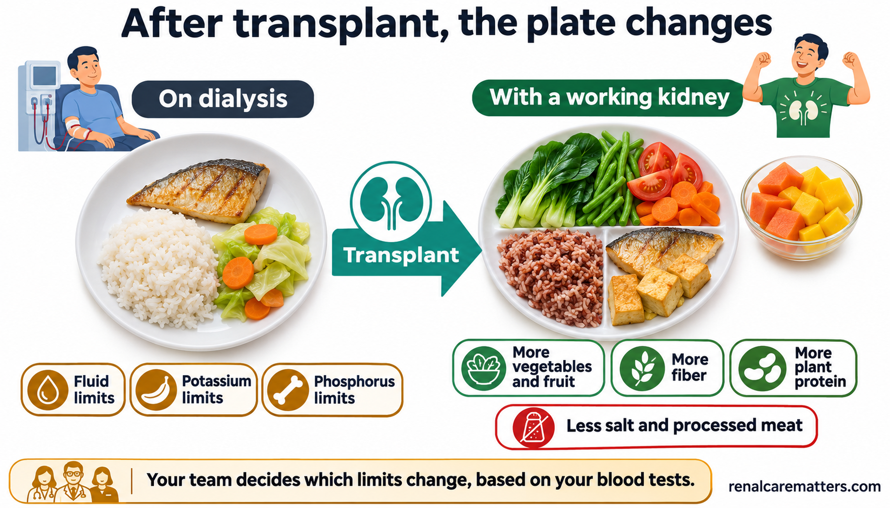
After transplant, the plate shifts from dialysis limits to a heart-healthy pattern. Your team decides which limits change.Pagkatapos ng transplant, lumilipat ang plato mula sa limitasyon ng dialysis patungo sa pagkaing mabuti sa puso. Ang team ang magpapasya kung aling limitasyon ang magbabago.Human sa transplant, mobalhin ang plato gikan sa limitasyon sa dialysis ngadto sa pagkaon nga maayo sa kasingkasing. Ang team ang modesisyon kung unsang limitasyon ang mausab.Kaibat ning transplant, lilipat ya ing pinggan ibat king limitasyun ning dialysis papunta king pamangan a mayap king pusu. Ing team ing magdesisyun nung nanung limitasyun ing mibago.
Most people find this shift hard. A 2026 Dutch study of 167 recipients, about 5 months after transplant, found that only about 1 in 5 ate enough fruit and only about 1 in 4 ate enough vegetables or fiber. Just 12% got at least half their protein from plants. Recipients of a kidney from a deceased donor ate fewer vegetables, and those taking five or more daily medicines got less of their protein from plants. The diet looked much like that of the general population, which is the point: a transplant does not change eating habits by itself.Karamihan ay nahihirapan sa pagbabagong ito. Natuklasan ng isang pag-aaral noong 2026 sa Netherlands sa 167 recipient, mga 5 buwan pagkatapos ng transplant, na mga 1 lamang sa bawat 5 ang kumakain ng sapat na prutas at mga 1 lamang sa bawat 4 ang kumakain ng sapat na gulay o fiber. 12% lamang ang kumukuha ng kalahati man lang ng kanilang protina mula sa halaman. Mas kaunti ang gulay na kinakain ng mga tumanggap ng bato mula sa namatay na donor, at mas kaunti ang protinang galing sa halaman ng mga umiinom ng lima o higit pang gamot araw-araw. Halos kapareho ng sa pangkalahatang populasyon ang kanilang pagkain, at iyon ang punto: hindi kusang binabago ng transplant ang ugali sa pagkain.Kadaghanan naglisod niini nga kausaban. Nakit-an sa usa ka pagtuon niadtong 2026 sa Netherlands sa 167 ka recipient, mga 5 ka bulan human sa transplant, nga mga 1 lang sa matag 5 ang mikaon og igo nga prutas ug mga 1 lang sa matag 4 ang mikaon og igo nga utanon o fiber. 12% lang ang nakakuha og labing menos katunga sa ilang protina gikan sa tanom. Mas gamay ang utanon nga gikaon sa nakadawat og bato gikan sa namatay nga donor, ug mas gamay ang protina gikan sa tanom sa nag-inom og lima o labaw pa nga tambal matag adlaw. Halos sama sa kinatibuk-ang populasyon ang ilang pagkaon, ug mao kana ang punto: dili kusog nga usbon sa transplant ang batasan sa pagkaon.Kadakalan mairapan king pamaglino a iti. Akit ning metung a pamag-aral kaniting 2026 king Netherlands king 167 a recipient, manga 5 bulan kaibat ning transplant, a manga 1 mu king balang 5 ing mangan sapat a bunga at manga 1 mu king balang 4 ing mangan sapat a gule o fiber. 12% mu ing kukwang kalahati man mu ning protina da ibat king tanaman. Mas dikit ing gule a kakanan dareng tinggap batu ibat king mete a donor, at mas dikit ing protinang ibat king tanaman dareng minum lima o mas dakal a gamot aldo-aldo. Kalupa ne ning king pangkalahatang populasyun ing pamangan da, at ita ing punto: e kusang babaguan ning transplant ing ugali king pamangan.
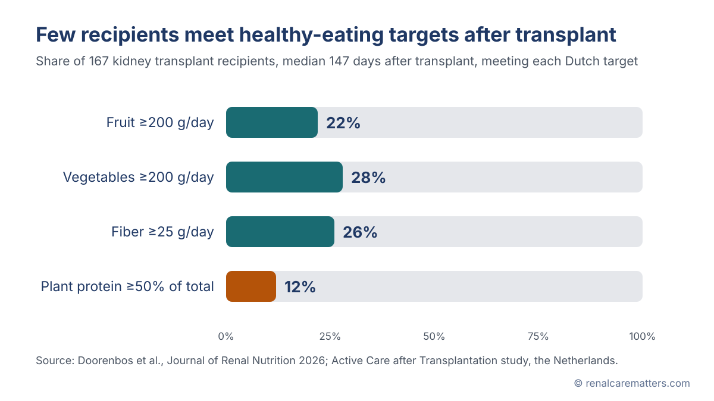
Few people met healthy-eating targets about 5 months after transplant: fruit 22%, vegetables 28%, fiber 26%, and plant protein 12% (Doorenbos et al., 2026; Dutch targets).Kaunti ang nakaabot sa target ng malusog na pagkain mga 5 buwan pagkatapos ng transplant: prutas 22%, gulay 28%, fiber 26%, at protinang halaman 12% (Doorenbos et al., 2026; target ng Netherlands).Gamay ra ang nakaabot sa target sa himsog nga pagkaon mga 5 ka bulan human sa transplant: prutas 22%, utanon 28%, fiber 26%, ug protina sa tanom 12% (Doorenbos et al., 2026; target sa Netherlands).Dikit mu ing miabut king target ning masalusung pamangan manga 5 bulan kaibat ning transplant: bunga 22%, gule 28%, fiber 26%, ampo protinang tanaman 12% (Doorenbos et al., 2026; target ning Netherlands).
Food safety and medicine safetyKaligtasan sa pagkain at gamotKaluwasan sa pagkaon ug tambalKaligtasan king pamangan at gamot
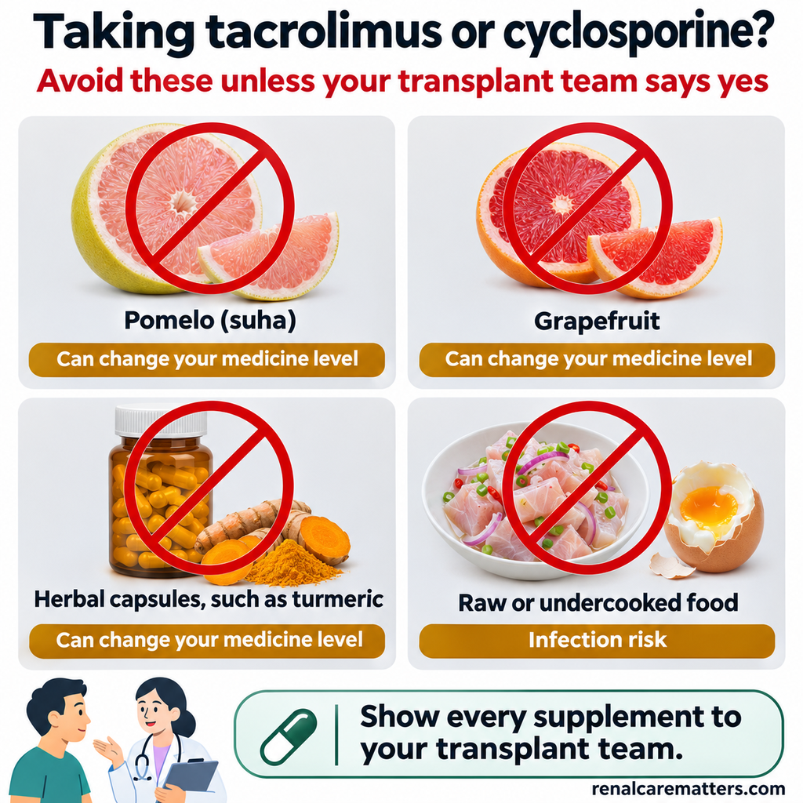
A card for the fridge door: foods and supplements to avoid with tacrolimus or cyclosporine unless your team says yes.Kard para sa pinto ng ref: mga pagkain at supplement na dapat iwasan kapag umiinom ng tacrolimus o cyclosporine maliban kung pumayag ang team.Kard alang sa pultahan sa ref: mga pagkaon ug supplement nga angay likayan kung nag-inom og tacrolimus o cyclosporine gawas kung motugot ang team.Kard para king pasbul ning ref: reng pamangan ampo supplement a dapat iwasan nung minum tacrolimus o cyclosporine nung e pumayag ing team.
- Pomelo (suha) and grapefruit can raise blood levels of tacrolimus and cyclosporine by blocking the liver and gut enzymes that clear them. A case report described exactly this after a transplant patient ate pomelo. Avoid both unless your transplant team says otherwise.Ang suha (pomelo) at grapefruit ay maaaring magpataas ng level ng tacrolimus at cyclosporine sa dugo dahil hinaharangan nila ang mga enzyme sa atay at bituka na nag-aalis sa mga ito. May case report na naglarawan nito mismo pagkatapos kumain ng suha ang isang transplant patient. Iwasan ang dalawa maliban kung iba ang sabi ng transplant team.Ang suha (pomelo) ug grapefruit mahimong mopataas sa lebel sa tacrolimus ug cyclosporine sa dugo tungod kay gibabagan nila ang mga enzyme sa atay ug tinai nga motangtang niini. Adunay case report nga naghulagway gyud niini human mikaon og suha ang usa ka transplant patient. Likayi ang duha gawas kung lahi ang giingon sa transplant team.Ing suha (pomelo) ampo grapefruit malyaring pataasan dang level ning tacrolimus ampo cyclosporine king daya uli ta arangan da reng enzyme king ate ampo bituka a mangilako karela. Atin case report a minyabi kaniti mismu kaibat nang mangan suha ing metung a transplant patient. Iwasan me ing adwa nung e aliwa ing sabi ning transplant team.
- Herbal products such as turmeric (luyang dilaw) capsules and other supplements can also change tacrolimus levels. Show every bottle to your team before you start it.Mga herbal na produkto gaya ng kapsulang luyang dilaw (turmeric) at iba pang supplement ay maaari ring magbago ng level ng tacrolimus. Ipakita ang bawat bote sa team bago ito simulan.Mga herbal nga produkto sama sa kapsula sa luyang dilaw (turmeric) ug uban pang supplement mahimo usab mousab sa lebel sa tacrolimus. Ipakita ang matag botelya sa team sa dili pa kini sugdan.Reng herbal a produktu antimo ning kapsulang luyang dilaw (turmeric) ampo aliwang supplement malyari dang baguan naman ing level ning tacrolimus. Ipakit me ing balang bote king team bayu me pimpisan.
- Food safety: avoid raw or undercooked meat, fish, eggs (including kinilaw and soft-boiled balut), unpasteurized milk, and street food left at room temperature. Wash vegetables and hands well.Kaligtasan sa pagkain: iwasan ang hilaw o kulang sa lutong karne, isda, itlog (kasama ang kinilaw at malasadong balut), hindi pasteurized na gatas, at street food na nakaiwan sa labas. Hugasang mabuti ang gulay at kamay.Kaluwasan sa pagkaon: likayi ang hilaw o kulang sa luto nga karne, isda, itlog (lakip ang kinilaw ug malasado nga balut), dili pasteurized nga gatas, ug street food nga nabilin sa gawas. Hugasi pag-ayo ang utanon ug kamot.Kaligtasan king pamangan: iwasan ing ilaw o kulang king lutu a karne, asan, ebun (kayabe ing kinilaw ampo malasadong balut), ing e pasteurized a gatas, ampo street food a mekawani king pali. Dalisan mung mayap ing gule ampo gamat.
- Exercise after surgery restarts with walking within days. Your surgeon will tell you when lifting is safe, usually after several weeks while the wound heals. The habits you built while waiting make this restart easier.Ang ehersisyo pagkatapos ng operasyon ay muling nagsisimula sa paglalakad sa loob ng ilang araw. Sasabihin ng surgeon kung kailan ligtas magbuhat, karaniwang pagkalipas ng ilang linggo habang gumagaling ang sugat. Ang mga ugaling nabuo mo habang naghihintay ay nagpapadali sa muling pagsisimulang ito.Ang ehersisyo human sa operasyon magsugod pag-usab sa paglakaw sulod sa pipila ka adlaw. Isulti sa surgeon kung kanus-a luwas ang pagbayaw, kasagaran human sa pipila ka semana samtang naayo ang samad. Ang mga batasan nga imong natukod samtang naghulat makapasayon niini nga pagsugod pag-usab.Ing ehersisyu kaibat ning operasyun mamimpisan pasibayu king paglakad king lalam ning pilan a aldo. Sabyan ning surgeon nung kapilan ligtas ing pamuat, karaniwan kaibat ning pilan a dominggu kabang mayayap ing sugat. Deng ugali a abuo mu kabang manaya pamadali la king pamimpisan pasibayu a iti.
Build your question list for the next visitBuuin ang iyong listahan ng tanong para sa susunod na pagbisitaHimoa ang imong lista sa pangutana alang sa sunod nga pagbisitaBuuan me ing listahan ning kutang mu para king susunod a pamibisita
Tick the questions that matter to you, then print or copy the list and bring it to your nephrologist or transplant team.Markahan ang mga tanong na mahalaga sa iyo, pagkatapos ay i-print o kopyahin ang listahan at dalhin sa iyong nephrologist o transplant team.Markahi ang mga pangutana nga importante kanimo, unya i-print o kopyaha ang lista ug dad-a sa imong nephrologist o transplant team.Markan me ing kutang a mayalaga keka, kaibat i-print o kopyan me ing listahan at darang me king nephrologist o transplant team mu.
Common questionsMga karaniwang tanongKasagarang mga pangutanaReng karaniwang kutang
Frailty in transplant candidates: prevalence, prognosis, measurement
Bottom line. Physical frailty is common on the kidney transplant (KT) waiting list, independently associated with waitlist mortality, lower likelihood of listing, and post-transplant death, and measurable at the bedside in under 5 minutes. Whether it is causal for post-transplant outcomes, and therefore whether reversing it changes those outcomes, remains unproven.
Physiology first. Frailty is loss of physiologic reserve across systems. In kidney failure, skeletal muscle protein balance tips toward net catabolism through several converging mechanisms: metabolic acidosis activates the ubiquitin–proteasome pathway; chronic inflammation (interleukin-6, tumor necrosis factor-α) and insulin resistance blunt anabolic signaling through Akt (protein kinase B) and mTOR (mechanistic target of rapamycin); myostatin is upregulated; amino acids (roughly 6–12 g per hemodialysis session) are lost into dialysate; anorexia lowers intake; and dialysis-day inactivity removes the mechanical stimulus. The phenotype that results, low grip, slow gait, exhaustion, low activity, and weight loss, is the clinical readout of that negative balance. Muscle quality matters as well as quantity: in a 2025 two-center cohort of 608 recipients, computed tomography (CT)-defined myosteatosis, not sarcopenia, was associated with all-cause graft loss and death in the US cohort (adjusted hazard ratio [aHR] 1.78 and 2.35), although not in the Dutch cohort.
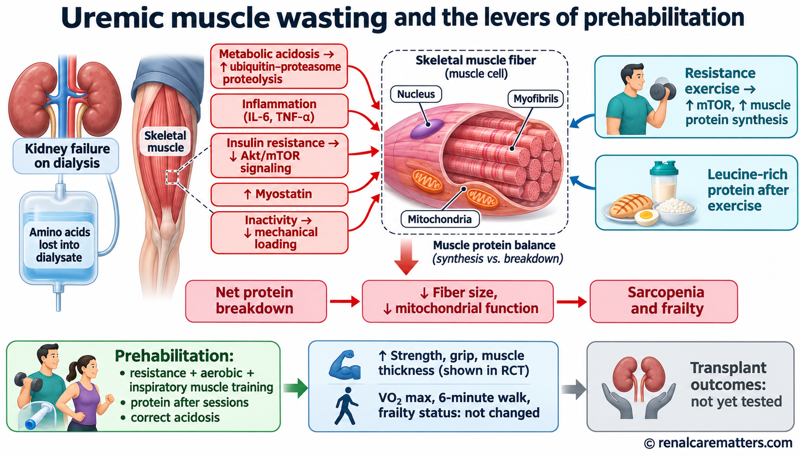
Converging drivers of uremic muscle wasting, and the levers prehabilitation pulls. Strength and muscle gains are shown in a randomized trial; transplant outcomes are not yet tested.
Prevalence and prognosis
| Study | Population | Finding | Certainty |
|---|---|---|---|
| Haugen 2020 | 4,616 candidates (multicenter cohort) projected to the US registry | 13.3% frail (Fried ≥3) at evaluation; projected national prevalence 16.4% (14.4–18.4%), about 91,738 candidates | Cohort plus registry modeling |
| FRAILMar (Pérez-Sáez 2025) | 121 waitlisted, Spain, mean age 63 | 40% had Fried score ≥2, the trial's lower frailty threshold; not comparable with ≥3 estimates | Single-center baseline; consenting volunteers |
| Huang 2025 | 2,708 candidates, 2 US centers | Low activity 40%, low physical function (gait speed) 16%, high physical burden 54%. Low function: listing aHR 0.54 (0.45–0.64); waitlist mortality adjusted sub-hazard ratio 1.83 (1.30–2.58). Physical burden discriminated best (C-statistic 0.69) | Prospective cohort; association |
| McAdams-DeMarco 2015 | 537 recipients, frailty at KT | 5-year survival 91.5% non-frail, 86.0% intermediately frail, 77.5% frail; adjusted HR for death 2.17 (1.01–4.65) | Single-center cohort; wide CI |
| Karnabi 2024 (systematic review) | 50 studies, 36 instruments | Frailty and low function consistently associated with mortality; heterogeneity prevented pooling | Observational synthesis |
The lower boundary of the McAdams-DeMarco confidence interval (1.01) is a reminder that single-center frailty estimates are imprecise. Every row above is associational: frail candidates carry more comorbidity, longer dialysis vintage, and worse cardiopulmonary reserve, so residual confounding is likely.
What the guideline says
The KDIGO (Kidney Disease: Improving Global Outcomes) 2020 guideline on the evaluation and management of candidates for kidney transplantation advises against excluding candidates on age alone and instead weighing age in the context of comorbidities, including frailty (Section 2), and lists frailty with body habitus among surgical-candidacy assessments (Section 7). It does not mandate a specific instrument or a frailty threshold for exclusion. Grades for these statements are given in the full report and are not restated here. In practice, use frailty to target optimization, not as a gate.
Choosing an instrument
| Tool | Components | Time | Best use |
|---|---|---|---|
| Fried Physical Frailty Phenotype | Grip, 4.5-m gait, exhaustion, activity, weight loss; ≥3 frail, 1–2 prefrail | ~5 min with dynamometer | Most transplant-validated; FRAILMar stratified on it |
| Short Physical Performance Battery (SPPB) | Balance, 4-m gait, 5 chair stands (0–12) | ~5 min, no equipment | Serial tracking of response to prehabilitation |
| Clinical Frailty Scale (CFS) | Judgment-based 1–9 | <1 min | Triage; less sensitive to change |
| Grip strength, gait speed alone | Single measures | <2 min | Quick serial monitoring in the dialysis unit |
Different tools label different people as frail, so pick one and use it serially. Weight loss and exhaustion are the Fried criteria most confounded by fluid shifts and uremia; a 2026 survey of 179 Spanish nephrologists rated them least useful in kidney failure.
What the prehabilitation evidence actually shows
The editorial by Lorenz and colleagues in the Journal of Renal Nutrition (2026) frames prehabilitation as multimodal: exercise, nutritional optimization, and psychological support. The evidence base, however, is still mostly small, exercise-only, and built on surrogate endpoints. The American Society of Transplantation and the European Society for Organ Transplantation (ESOT, 2023) have issued consensus statements supporting prehabilitation, and a 2025 review describes it as a valuable perioperative intervention, while calling for multicenter randomized controlled trials (RCTs) before guidelines can be written (Kirkman 2025). FRAILMar was published with an accompanying editorial (Weaver, Orandi, and McAdams-DeMarco 2025) that places it in this context.
| Study | Design / n | Intervention | Key results | Main limitation |
|---|---|---|---|---|
| McAdams-DeMarco 2019 | Pilot, n=24 enrolled (18 participated; 17% of eligible) | Weekly center-based physical therapy plus home exercise | Accelerometer activity +64% at 2 months; length of stay 5 vs 10 days in 5 transplanted participants vs matched controls (RR 0.69, 0.50–0.94) | Non-randomized; n=5 for the outcome |
| Lorenz 2024 | Two-center pilot, n=15 | Home-based individualized prescription plus 8 weekly calls | 60% completed; no unanticipated adverse events | Feasibility only |
| Bartlett 2025 | Randomized, n=29 analyzed (23 vs 6) | Supervised resistance training 1 h, 2×/week, 12 months | SPPB 5.2→7.2; sit-to-stand in 30 s 8.0→16.2; grip 14.3→17.4 kg; muscle fiber diameter +18.6 μm, mitochondrial markers improved | Control arm under-enrolled; within-group analysis |
| FRAILMar 2025 (Pérez-Sáez) | RCT, n=121; 106 completed | 24 sessions (1 h, 3×/week, 8 weeks, in person or by video): aerobic, resistance, inspiratory muscle training; protein supplement after each session | Maximal workload on cardiopulmonary exercise testing (CPET) +12.8 W (3.4–22.2); grip +1.8 kg (0.7–2.8); rectus femoris thickness on ultrasound +1.2 mm (0.3–2.0); respiratory muscle strength improved; frail subgroup also improved. No significant effect on VO₂ max, 6-minute walk distance, or frailty status | Single center; surrogate endpoints; multiplicity; one-third of eligible declined; gains waned by 6 months |
| Tsuchida 2026 (J Ren Nutr) | Meta-analysis, 5 RCTs, n=339, nondialysis CKD G3–G5 | Combined exercise plus nutrition | Peak oxygen uptake (VO₂ peak) +2.70 mL/kg/min (1.22–4.18); no change in kidney function | Few trials, heterogeneity, risk of bias |
| Uno 2026 (Clin Nutr ESPEN) | Meta-analysis, 8 trials, 231 hemodialysis patients | Combined nutrition plus exercise vs nutrition alone | 6-minute walk +45 m (12.6–77.8); gait speed +0.09 m/s; Timed Up and Go −1.44 s; no effect on lean mass, intake, or quality of life | Grading of Recommendations, Assessment, Development and Evaluation (GRADE) certainty very low for all outcomes |
| ACT 2024 (Knobbe), post-transplant | Multicenter RCT, n=221 | 3 months supervised exercise ± 15 months dietary counseling | Physical functioning improved at 3 months (exercise arm), not at 15 months; safe | Open label; benefit not sustained |
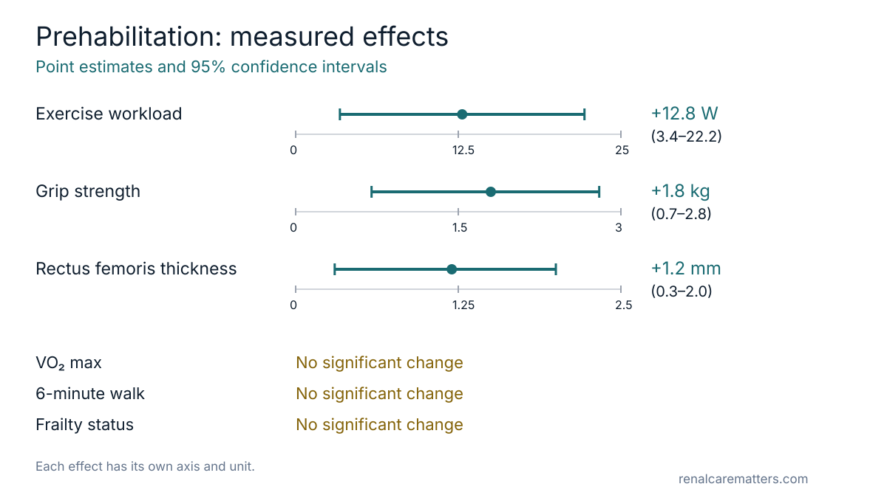
FRAILMar 8-week effects versus usual care, point estimates with 95% confidence intervals (Pérez-Sáez et al., 2025). Each outcome has its own axis and unit.
Appraisal
What is established: structured exercise improves exercise capacity, strength, and muscle size in waitlisted candidates, including frail ones (strong evidence for surrogates from one adequately sized RCT plus consistent smaller studies). What is suggested: shorter length of stay, from a five-patient pilot comparison, and better tolerance of surgery, by extrapolation from non-transplant surgery. What is not shown: any effect on delayed graft function, complications, readmission, graft survival, or mortality. As Lorenz and colleagues note, no RCT has yet examined post-transplant outcomes at all. The FRAILMar protocol pre-specified a 90-day post-transplant composite endpoint; that analysis, which depends on how many participants are transplanted, has not been reported. FRAILMar also did not move VO₂ max, 6-minute walk distance, or frailty status, so its gains are in strength and muscle rather than whole-body aerobic fitness or frailty category.
Magnitude matters. A 12.8-W gain on CPET is a modest absolute change, and a 1.8-kg grip gain is smaller than the changes usually considered clinically meaningful in older adults. Whether these translate into fewer falls or faster post-operative mobilization is a mechanistic inference. Non-transplant surgery tempers expectations further. A systematic review of 23 RCTs (2,475 patients) in colorectal cancer surgery found moderate-certainty evidence that preoperative nutritional supplementation reduces infectious complications (relative risk 0.65), but only low-certainty evidence for shorter length of stay (as summarized by Lorenz 2026). The largest pragmatic trial in frail patients tested coach-supported, home-based multimodal prehabilitation in 847 adults aged 60 or older with Clinical Frailty Scale ≥4 across 13 Canadian centers (McIsaac 2026). After a median 4 weeks, it found no difference in 30-day disability (adjusted mean difference −1.4) or complications (50.1% vs 47.7%; adjusted odds ratio 1.05); only participants completing more than 75% of prescribed exercise reported less disability. Frame prehabilitation accordingly: a safe intervention with proven functional benefit and unproven transplant-outcome benefit.
Three tiers of evidence: improved in a randomized trial, unchanged in that trial, and not yet tested in transplant trials.
Prescribing prehabilitation: dose, nutrition, mind, and timing
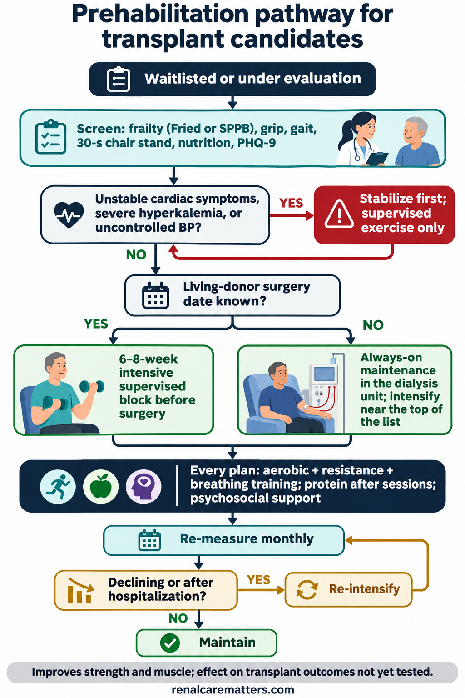
Printable pathway: screen, clear, choose a living-donor intensive block or deceased-donor maintenance, then re-measure monthly.
Center-based or home-based?
| Center-based | Home-based | Intradialytic | |
|---|---|---|---|
| Reach | Low (travel, cost, time on top of 12 h/week of dialysis) | High | High for hemodialysis patients |
| Adherence / attrition | Best | Poorer; higher attrition (Lorenz 2024: 60% completion) | Good when staff-led |
| Dose control and safety | Supervised progression | Self-reported | Monitored, but limited to cycling and light resistance |
| Fit for the Philippines | Limited to tertiary centers | Feasible with family support | Most scalable: low-cost pedal exercisers |
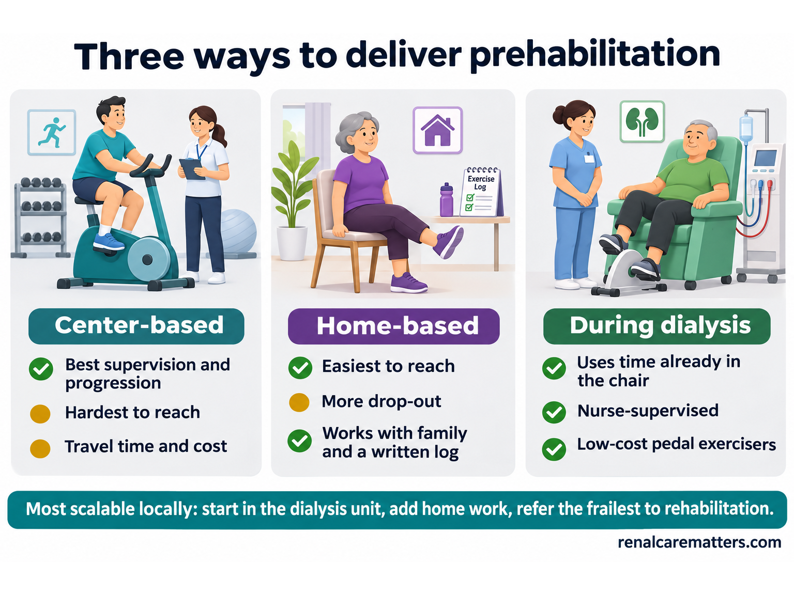
Three delivery models compared. Intradialytic delivery is the most scalable option for Philippine hemodialysis units.
The timing problem
Non-transplant prehabilitation runs 2–6 weeks before a scheduled operation. The ESOT consensus recommends offering prehabilitation from waitlisting until surgery, but longer programs carry poorer adherence and higher attrition. Because the frailest patients are often never listed, starting prehabilitation before transplant evaluation may matter most for access. Deceased-donor waiting is unpredictable and can last years, and FRAILMar shows that an 8-week block decays by 6 months. Two practical responses follow. For deceased-donor candidates, treat prehabilitation as an always-on maintenance program embedded in dialysis care, with intensification during reactivation or when the candidate nears the top of the list. For living-donor transplants, the surgery date is known: this is the cleanest window for a classic 6–8-week intensive block, and the best place to start a local program.
Assessment without follow-through does not change outcomes
The GOAL cluster randomized trial (Logan et al., Kidney International 2026) tested a single outpatient comprehensive geriatric assessment (CGA) in 240 frail adults aged 65 or older across 15 Australian kidney clinics (mean age 77; about one-third on dialysis). Frailty was defined by a Frailty Index above 0.25. A one-time CGA without structured follow-up did not improve goal attainment or 12-month outcomes. The accompanying commentary by Nixon argued that the assessment must be tied to an intervention pathway.
GOAL did not study transplant candidates, and CGA is not prehabilitation. Its lesson transfers anyway: measuring frailty at listing is not an intervention. A frailty score that lives only in the transplant work-up file will not move. Build the pathway first (who prescribes exercise, who delivers it, who re-measures, and how results reach the transplant team), then screen.
After transplant: diet quality, determinants, and drug–food interactions
In the Active Care after Transplantation (ACT) study cohort, 167 kidney transplant recipients (40% female, mean age 51.9 years, median 147 days post-transplant) completed 3-day food diaries (Doorenbos et al., 2026). Adherence to Dutch food-based guidelines was low: fruit ≥200 g/day 22%, vegetables ≥200 g/day 28%, fiber ≥25 g/day 26%, plant-to-total protein ratio ≥0.50 12%. Intake resembled the general population, slightly better for salt, red meat, and sugary drinks. Deceased-donor transplantation was associated with lower vegetable intake (standardized β −0.45, 95% CI −0.75 to −0.14), and polypharmacy (≥5 daily medicines) with a lower plant-to-total protein ratio (standardized β −0.43, −0.82 to −0.05). The targets are Dutch and the cohort is European; apply them to Filipino diets as directional, not numeric, goals.
Why it matters mechanistically. Post-transplant cardiometabolic risk is driven by glucocorticoid-induced appetite and insulin resistance, calcineurin-inhibitor effects on islet function and lipids, and weight regain once uremic anorexia lifts. A Mediterranean-style pattern targets these pathways; KDOQI 2020 suggests it may improve lipid profiles in recipients (grade 2C). Plant protein and fiber add potassium and alkali load, which are now usually tolerated with a functioning graft.
Drug–food interactions to teach before discharge
- Pomelo (suha) and grapefruit: furanocoumarins inhibit intestinal cytochrome P450 3A4 and possibly P-glycoprotein, raising tacrolimus and cyclosporine exposure. A published case documented a marked tacrolimus rise after pomelo in a kidney recipient (Egashira 2003). Counsel avoidance.
- Turmeric, schisandra, berberine, ginger, pomegranate juice may raise tacrolimus exposure, and some products may lower it; most data are case-level or pharmacokinetic. Ask about every supplement at every visit and check troughs after any change.
- Food safety under induction and maintenance immunosuppression: avoid raw fish (kinilaw), undercooked eggs and meat, and unpasteurized dairy.
Patient handout card for discharge teaching on calcineurin-inhibitor food interactions and food safety.
Making it work in Philippine practice
Most Filipino transplant candidates are on in-center hemodialysis three times weekly, often with long travel times and out-of-pocket costs, which makes a separate center-based program unrealistic for many. The pragmatic model is dialysis-unit-embedded prehabilitation:
- Low-cost pedal exercisers used during the first half of sessions, led by dialysis nurses with a one-page protocol and stop criteria.
- A monthly 10-minute measurement day: grip (if a dynamometer is available), 4-m gait, 30-s sit-to-stand, weight trend versus dry weight.
- Dietitian review of protein intake using locally available, lower-phosphorus protein sources and renal oral nutrition supplements where affordable.
- Referral pathways to physical medicine and rehabilitation services, or to cardiac rehabilitation programs where they exist, for frail candidates.
- For living-donor pairs, schedule a 6–8-week supervised block before the operation date.
Coverage: the Philippine Health Insurance Corporation (PhilHealth) benefit packages for kidney transplantation are described in the PhilHealth Z Benefit guide. We have not verified a dedicated benefit for pre-transplant rehabilitation; confirm current coverage with the facility's PhilHealth office before promising it to patients.
Open questions
- Transplant outcomes: does prehabilitation reduce delayed graft function, complications, length of stay, readmission, or mortality? Adequately powered multicenter RCTs are needed (the FRAILMar 90-day composite and the Dutch PreCareTx trial of a 12-week tailored home program with a 12-week maintenance phase are steps in this direction).
- Timing and maintenance: what is the minimum effective maintenance dose, and how should programs intensify as transplant approaches?
- Delivery: how can home and intradialytic models reach the one-third who decline center-based programs without losing adherence?
- Nutrition: the optimal protein dose and timing for frail non-dialysis candidates, where kidney-protective restriction and anabolic needs conflict.
- Measurement: which frailty instrument best predicts transplant outcomes and responds to intervention? Simple patient-reported physical burden may outperform performance tests for risk prediction.
- Equity: frailty is used to decline listing; prehabilitation may be a route to fairer access if it converts "not yet" into "listed."